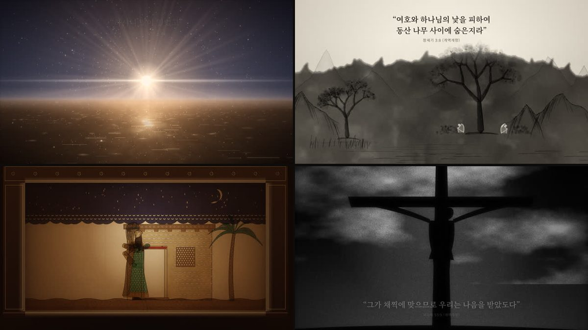
canvas-film
장면마다 화풍이 다른 시네마틱 영상을 HTML Canvas만으로 그립니다. 같은 장면 파일로 가로와 세로 MP4, 다국어 웹 플레이어를 만듭니다.
21 화풍 + 35 키트 · 11개 언어
만든 출처: jungrok5/one-scroll-bible (원본 작품 레포) · 한눈에 보는 성경 이야기 (라이브)
Claude Code 에이전트가 따르는 모션그래픽 스킬 모음입니다. 영상은 HTML Canvas 코드로 그리고, 같은 코드로 MP4를 녹화하거나 브라우저에서 재생합니다. 카드의 그림은 각 스킬로 만든 영상의 실제 장면입니다.

장면마다 화풍이 다른 시네마틱 영상을 HTML Canvas만으로 그립니다. 같은 장면 파일로 가로와 세로 MP4, 다국어 웹 플레이어를 만듭니다.
21 화풍 + 35 키트 · 11개 언어
만든 출처: jungrok5/one-scroll-bible (원본 작품 레포) · 한눈에 보는 성경 이야기 (라이브)
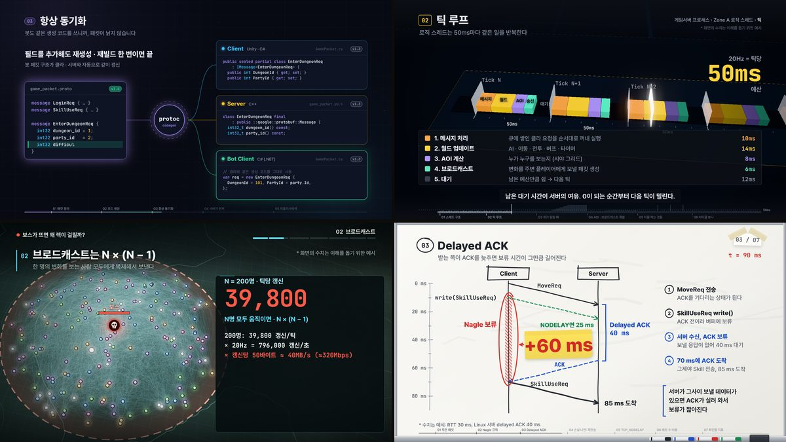
파이프라인, 프로토콜, 서버 루프 같은 기술 과정을 60–110초 설명 영상으로 그립니다. 주제마다 영상, 설명, 용어집 페이지와 MP4를 만듭니다.
12 주제 · 설명 방식 7가지
만든 출처: jungrok5/mmo-server-explained (원본 작품 레포) · MMO 서버 설명 영상 (라이브)
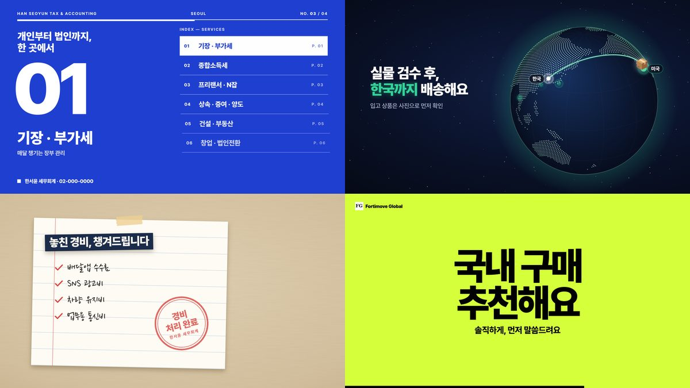
회사 사이트나 블로그를 읽고 15–40초 홍보 영상을 가로와 세로 MP4로 만듭니다. ElevenLabs 내레이션 · 효과음 · 배경음악을 넣고, 영상마다 원샷 프롬프트를 남깁니다.
9 스타일 · 고객 2곳
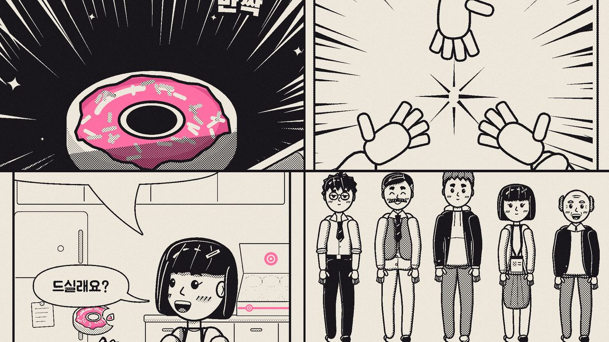
세로로 스크롤되는 무빙툰을 HTML Canvas로 그립니다. 데이터로 정의한 캐릭터, 관절을 검사한 몸, 흑백 망가 인쇄 마감, ElevenLabs 내레이션과 효과음으로 9:16 MP4와 브라우저에서 도는 장면 페이지를 만듭니다.
3장면 · 74초 · 캐릭터 5명
이 레포에서 만듦: motion-webtoon/examples/donut/
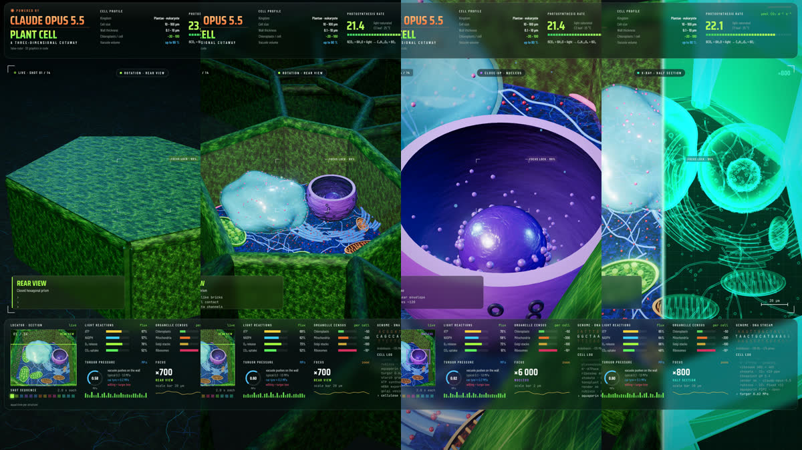
세포, 씨앗, 배터리 같은 표본 하나를 잘라 연 3D 모델로 만들고, 부분마다 카메라가 돌며 들어가는 9:16 쇼츠를 만듭니다. SF 계기판 HUD를 얹어 MP4와 브라우저에서 도는 페이지로 냅니다.
14샷 · 28초 · 3D + 2D 키트
이 레포에서 만듦: specimen-tour/examples/plant-cell/
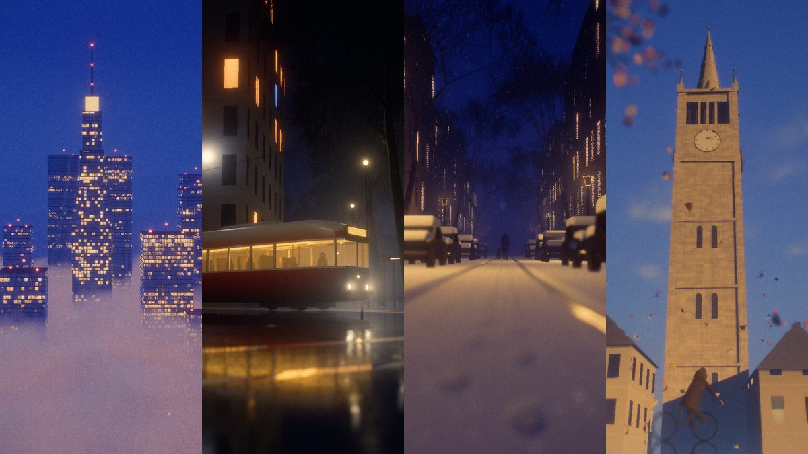
비 오는 밤거리, 눈 덮인 골목, 안개에 잠긴 도시, 웅덩이에 비친 시계탑 같은 시네마틱 3D 장면을 three.js로 만듭니다. 젖은 반사, 안개와 가로등 빛, 피사계 심도, 필름 그레인으로 렌더 같은 9:16 MP4와 브라우저에서 도는 샷 페이지를 만듭니다.
4샷 · 25.6초 · 날씨 4가지
이 레포에서 만듦: cinematic-3d/examples/four-weathers/
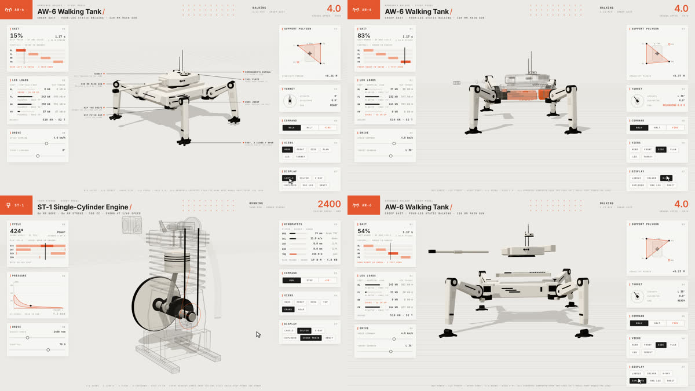
보행 전차나 엔진 같은 기계를 three.js 코드로 짓고, 부품을 움직이는 같은 모델에서 계산한 계기판과 라벨 · X-ray · 분해도 · 부품 분리 모드를 갖춘 인터랙티브 3D 시뮬레이터 페이지를 만듭니다. 커서가 버튼을 누르는 투어는 16:9 MP4로 굽습니다.
예제 2개 · 보행 전차 · 엔진 · 표시 모드 6가지
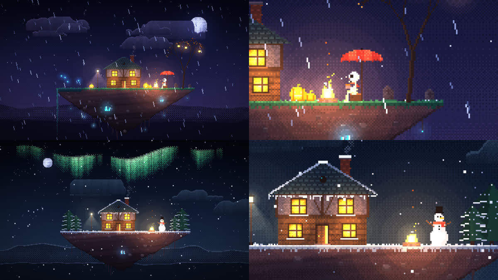
비 오는 밤의 떠 있는 섬처럼 아늑한 픽셀아트 장면을 이미지 파일 없이 코드로 그리고, 끊김 없이 반복되는 루프 영상으로 만듭니다. 빗줄기, 번개, 불티, 연기, 깜박이는 창문 불빛으로 1080p MP4 한 바퀴와 10시간 로파이 영상을 냅니다.
예제 2편 · 60초 · 40초 · 소품 28종
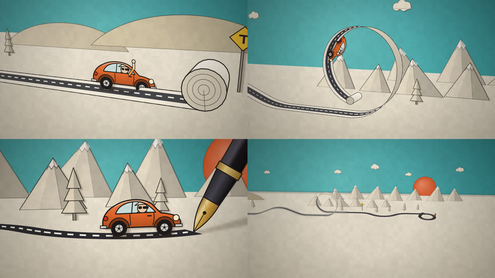
장난감 자동차가 바로 앞에서 만들어지는 종이 길을 달리는 페이퍼 크래프트 스톱모션 영상을 이미지 파일 없이 코드로 그립니다. 종이 두루마리가 길을 펼치고 만년필이 잉크로 길을 그리는 동안 종이 산이 접혀 올라오고, 1080p MP4와 브라우저에서 도는 페이지를 냅니다.
예제 30초 · 6박자 · 종이 길 + 잉크 길
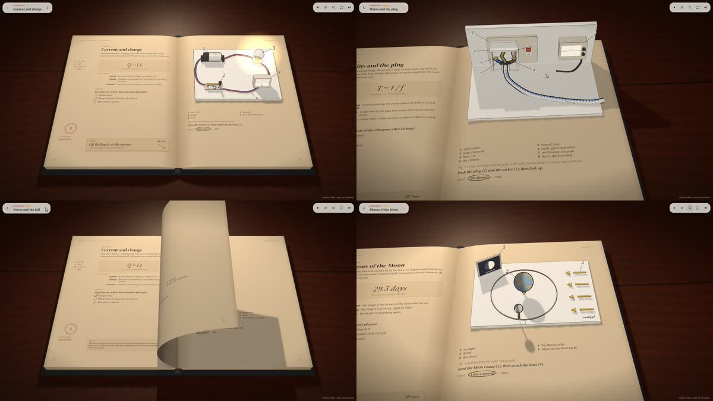
책상 위 스탠드 불빛 아래 펼친 책 한 권으로 수업 하나를 펼침면에 담는 인터랙티브 3D 교과서를 three.js로 만듭니다. 왼쪽은 공식 · 핵심어 · 예측 문제 · 들춰 보는 답, 오른쪽은 펜화처럼 빗금 친 팝업 디오라마이고, 커서 투어는 16:9 MP4로 굽습니다.
예제 2권 · 수업 5개 · 책장 넘김 · 돋보기 · 들춰 보는 답
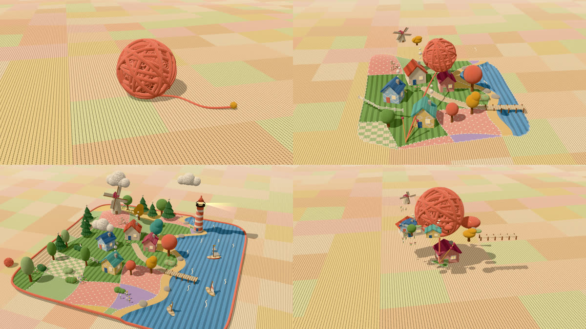
밭, 바다, 지붕, 나무까지 모두 털실로 뜬 작은 세상을 three.js로 만들고, 그 세상이 털실 공에서 떠져 나오는 영상을 만듭니다. 실 끝을 당기면 공이 떠올라 돌며 바깥으로 세상을 뜨고, 소품이 공에서 튀어나오며, 다시 풀려 공으로 돌아가는 1080p MP4와 브라우저에서 도는 페이지를 냅니다.
예제 20초 루프 · 뜨개 질감 8가지 · 소품 14종
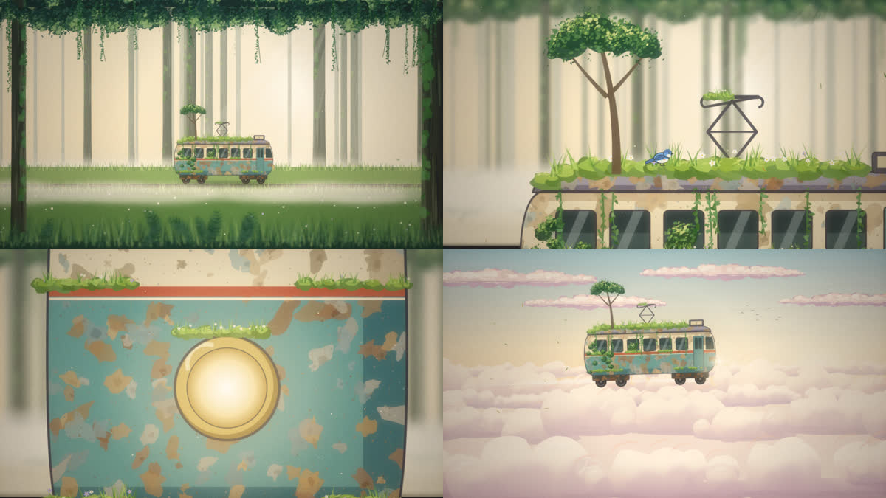
주제 하나를 주면 손그림 애니메이션 배경풍 단편 영화를 코드만으로 만듭니다. 붓 터치로 칠한 새벽 하늘과 안개 숲, 이끼와 녹이 앉은 주인공, 파랑새, 빛줄기와 낙엽을 멀티플레인 카메라로 찍고, 코드로 합성한 음악과 효과음을 붙인 1080p MP4와 브라우저에서 도는 페이지를 냅니다.
예제 48초 · 8샷 · 샷 문법 8박자
만든 출처: chetaslua의 X 게시물 (영상과 프롬프트) · ChetasLua/moss-keeper (그 결과물)
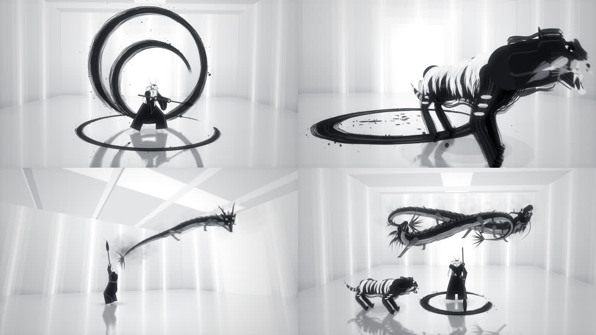
주제 하나를 주면 가면 쓴 무사가 하얀 스튜디오에서 거대한 붓을 휘두르고, 허공에 남은 먹 획이 호랑이와 용 같은 먹의 짐승으로 살아나는 액션 단편을 코드만으로 만듭니다. 바닥 반사, 마른 붓 결, 먹 연기, 모션 블러, 코드로 합성한 북소리를 붙인 1080p MP4와 브라우저에서 도는 페이지를 냅니다.
예제 21초 · 10샷 · 짐승 프리셋 6종
주제를 주면 그 주제에 맞는 움직이는 캐릭터 · 색 · 배경 · 음악 · 문구를 새로 설계해, 링크 하나로 보내는 홀로그램 티켓 초대장을 만듭니다. 봉투를 열면 티켓이 튀어나와 기울일 때마다 포일이 빛나고, 뒤집으면 엽서가 나오며, 참석 회신 · 캘린더 추가 · 음악이 붙습니다. 만들기 페이지, QR 공유 이미지, 16:9 · 9:16 MP4를 냅니다.
예제 졸업 초대장 · 새 테마 · 기본 테마 6종 · 3개 언어
만든 출처: KanaWorks_AI의 X 게시물 (しあわせパス)
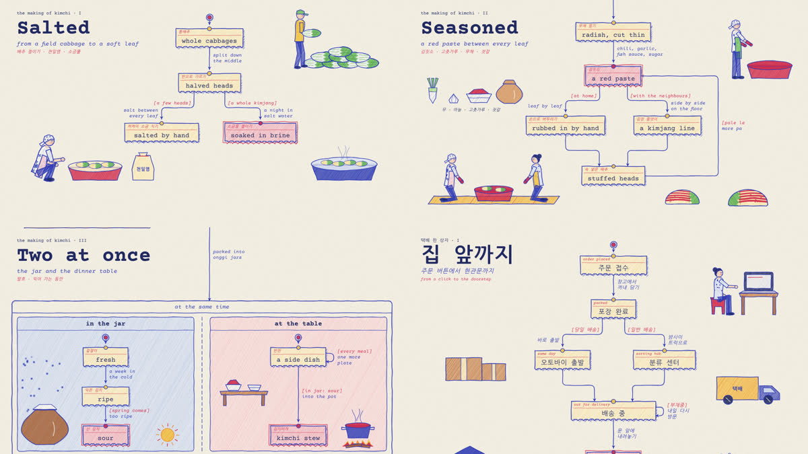
주제 하나를 주면 그 과정을 손으로 그린 상태도로 만들어, 크림색 종이 위에 코발트 잉크와 색연필로 한 단계씩 그려 나가는 설명 영상을 코드만으로 만듭니다. 갈래와 되돌아가는 고리, 동시에 바뀌는 두 영역, 옆에서 일하는 사람들의 그림, 재생 바와 자막을 붙인 MP4와 브라우저에서 도는 페이지를 냅니다.
예제 46초 · 3장 20단계 · 소품 36종
만든 출처: ann_nnng의 X 게시물 (향 만드는 과정 상태도) · kevin_t_ngo의 X 게시물 (버블티 가게 상태도)
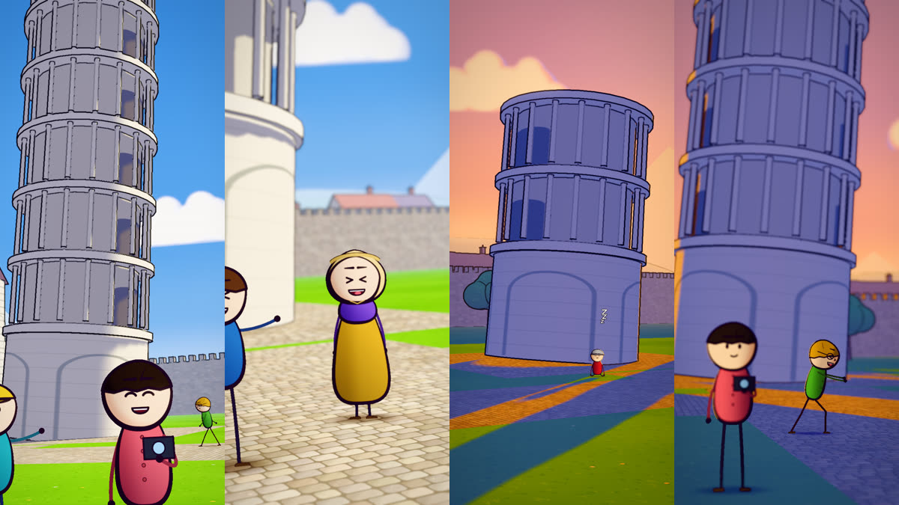
주제 하나를 주면 납작한 2D 만화 캐릭터가 잉크 외곽선을 두른 3D 마을에서 움직이는 1분짜리 세로 애니메이션 쇼츠를 코드만으로 만듭니다. 황당한 사실로 시작해 "You see"로 원리를 풀고 반전으로 끝나는 대본, ElevenLabs 내레이션, 단어에 맞춘 샷, 코드로 합성한 음악과 효과음을 붙인 MP4와 브라우저에서 도는 페이지를 냅니다.
예제 62초 · 19샷 · 조명 프리셋 4종
만든 출처: mromidev/claude-animated-shorts (원본 스킬, MIT) · X 게시물 (소개)
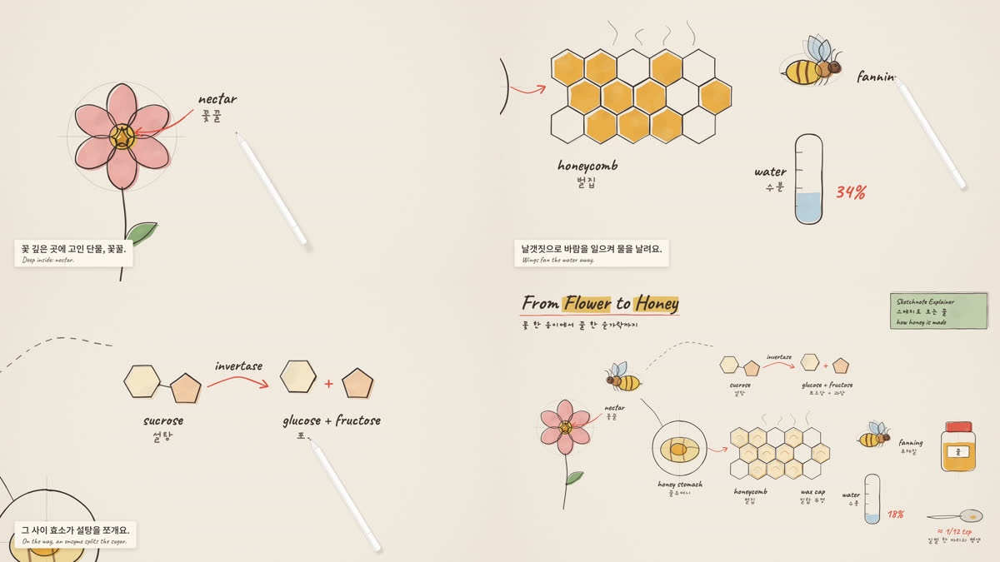
주제 하나를 주면 아이패드에 스케치하듯 그림 하나씩 그려 가며 설명하는 지식 영상을 코드만으로 만듭니다. 크림색 종이 위의 연필선과 살짝 어긋난 수채 채색, 손글씨 라벨, 두 줄 자막, 그림 사이를 미끄러지는 카메라, 마지막에 한 장의 인포그래픽으로 물러나는 화면, 연필 소리와 피아노를 붙인 MP4와 브라우저에서 도는 페이지를 냅니다.
예제 69초 · 10비트 · 그림 키트 19종
만든 출처: EianLu의 X 게시물 (샤오홍슈에 맞는 지식 설명 스타일) · lemomo_ai의 X 게시물 (iPad Sketch Explainer 원본 영상)
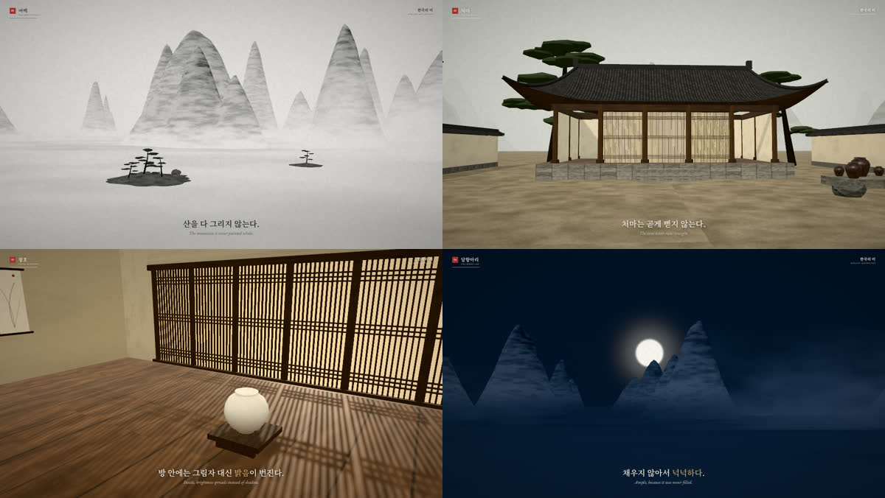
문화 · 공예 · 생각 하나를 주제로 주면, 안개 속 수묵 산수와 처마 · 창살 · 그릇을 코드로 지은 3D 세트 사이를 천천히 지나가는 장(章) 구성의 16:9 미학 에세이 영상을 만듭니다. 장 배지, 한 글자씩 쓰이는 두 언어 자막, 설명 라벨, 합성한 음악, 낙관을 찍은 제목 카드까지 3D 에셋 없이 그려 MP4와 브라우저에서 도는 페이지로 냅니다.
예제 58초 · 4장 · 조명 프리셋 7종
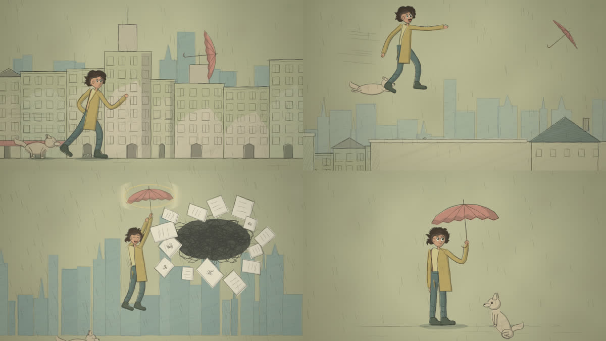
주제 하나를 주면 거친 연필 선과 탁한 색, 미완성 느낌의 스케치 카툰 단편을 코드만으로 만듭니다. 빈 종이에 그려지며 시작해 다시 빈 종이로 돌아오는 이야기, 끓는 선, 선에서 살짝 비껴 칠한 색, 다리가 긴 캐릭터, 코드로 합성한 음악과 효과음을 붙인 1080p MP4와 브라우저에서 도는 페이지를 냅니다.
예제 35.5초 · 8샷 · 표정 13종
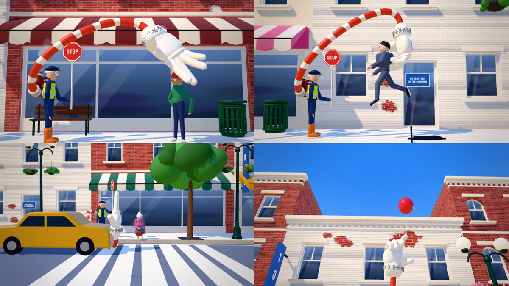
주제 하나를 주면 무표정한 주인공이 햇살 좋은 거리를 걷는 동안 고무호스 팔 끝의 거대한 장갑이 동네의 작은 골칫거리를 하나씩 해결하는 대사 없는 개그 단편을 코드만으로 만듭니다. 칠한 벽돌 거리, 관절이 있는 장갑, 표정이 있는 캐릭터, 코드로 합성한 그루브와 효과음, 말장난 제목을 붙인 1080p MP4와 브라우저에서 도는 페이지를 냅니다.
예제 27.5초 · 개그 5개 · 손 모양 22가지
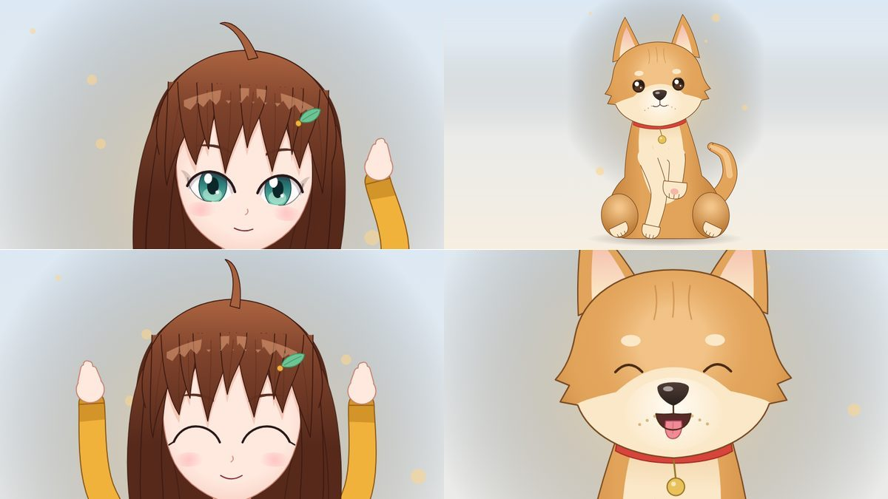
주제 하나를 주면 숨 쉬고, 깜빡이고, 포인터를 눈으로 먼저 따라가고, 머리카락·귀·꼬리·끈이 스프링으로 흔들리는 2.5D 캐릭터를 사람이든 동물이든 코드로 새로 설계합니다. 팔다리는 관절 한계 안에서 손을 흔들고 앞발을 내밀며, 한글 립싱크로 말합니다. 라이브 페이지, 한 파일 HTML, 캐스트 시트, MP4를 냅니다.
예제 2개 · 사람 · 강아지 · 120 Hz 결정적 시뮬레이션
만든 출처: yeko의 X 게시물 (LivLiv Player 공개) · livliv-dev/player (Apache-2.0)
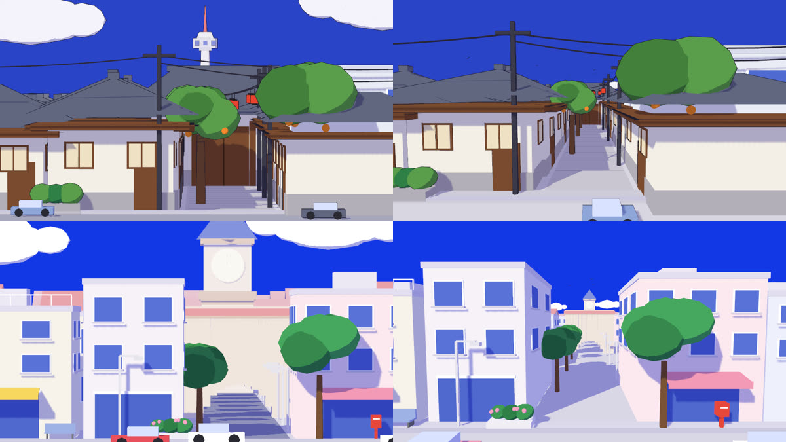
주제 하나를 주면 망원 렌즈로 보면 한 장의 평면 그림 같은 3D 거리를 만들고, 돌리 줌으로 그 틈을 열어 숨은 골목과 먼 랜드마크를 드러냈다가 매 박자 다시 평면으로 돌아오는 8초 루프 영상을 코드만으로 만듭니다. 파스텔과 잉크 외곽선 두 가지 마감, 모션 블러, 카메라 움직임에 맞춘 휙 소리와 비트를 붙인 MP4와 라이브 페이지를 냅니다.
예제 · 템플릿 2개 · 시점 7가지 · 마감 2가지
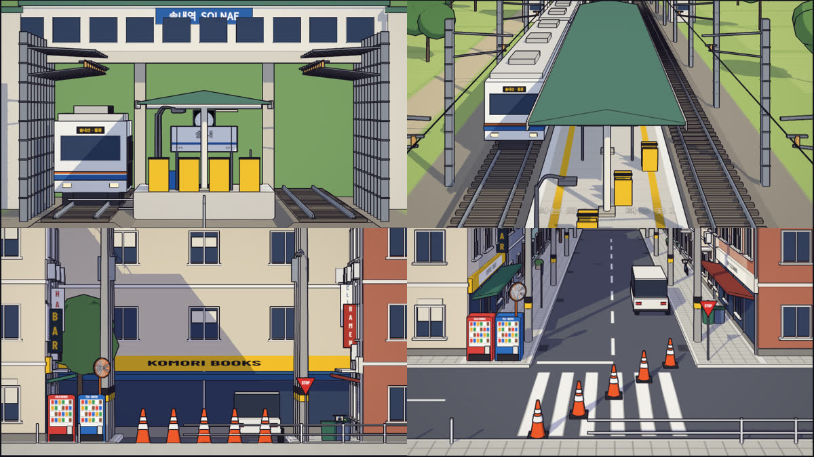
주제 하나를 주면 거리 · 승강장 · 통로처럼 긴 축이 있는 장소를 선화 일러스트 3D로 짓고, 망원 렌즈로 한 장의 평면 그림처럼 보이게 했다가 돌리 줌과 코너 시점으로 입체를 드러내는 10초 루프를 코드만으로 만듭니다. 평면일 때 몰래 깊이를 바꾼 물건이 줄에서 대각선으로 드러나고, 잉크 선 · 두 단계 음영 · 그림자 해칭 · 모션 블러를 갖춘 MP4와 라이브 페이지를 냅니다.
예제 · 템플릿 2개 · 샷 8가지 · 패스 3개
만든 출처: dotslashsimran/simcraft의 perspective-illusion 스킬 (SKILL.md)
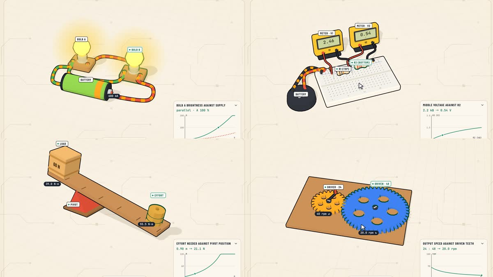
주제 하나를 주면 장난감 같은 3D 실험대를 켜고 부품을 하나씩 바꿔 보는 실습 레슨 앱을 새로 설계합니다. 실험대와 늘 같은 값을 보여 주는 회로도 · 힘 그림, 실시간 그래프, 지금 숫자가 들어간 수식, 해 보기 목표, 여러 언어를 갖추고, 커서 투어는 1080p MP4로 굽습니다.
예제 2개 · 회로 101 · 기계 101 · 레슨 9개 · 영어 · 한국어
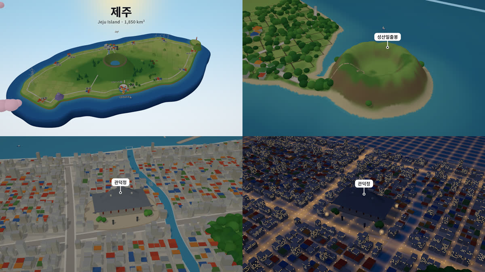
장소 하나를 주면 그 지역을 하늘에 뜬 두툼한 장난감 지도로 만들고, 카메라가 지도 속으로 다이브해 해안 · 폭포 · 도시 같은 근접 장면을 보여 준 뒤 다시 떠오르는 3D 지도 영상을 three.js로 만듭니다. 지도 위에 누운 지명, 큼직한 랜드마크 미니어처, 핀 라벨, 밤이 내린 도시까지 담은 1080p MP4와 브라우저에서 도는 페이지를 냅니다.
예제 30초 · 장면 3개 · 소품 19종
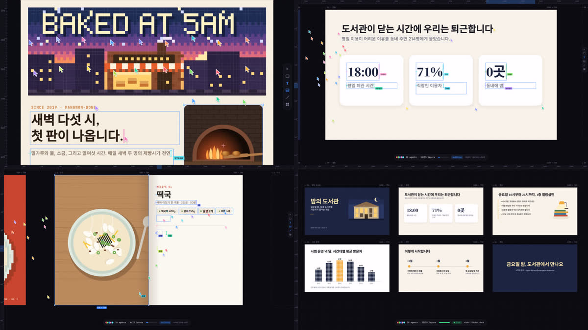
주제 하나나 기존 파일(PPTX · PDF)을 주면 웹사이트, 발표 장표, 책, 포스터 무엇이든 새로 설계하고, 어두운 디자인 에디터에서 색색의 커서 수십 개가 박스를 끌어 그리고, 글을 타이핑하고, 사진 파일을 끌어다 놓고, 픽셀 표지와 차트를 한 칸씩 칠해 함께 완성하는 영상을 코드만으로 만듭니다. 긴 페이지는 스크롤하고 장표와 펼침면은 한 장씩 패닝하며, 마지막엔 게시되며 전체로 줌아웃합니다. 효과음을 합성한 MP4와 라이브 페이지를 냅니다.
예제 3개 · 웹 · 장표 · 책 · PPTX · PDF → 초안 빌드
만든 출처: AlexZ의 X 게시물 ("Computer use 需要进化到鼠标集群") · harshit의 X 게시물 (Craziest Website Reveal ever, 원본 영상)
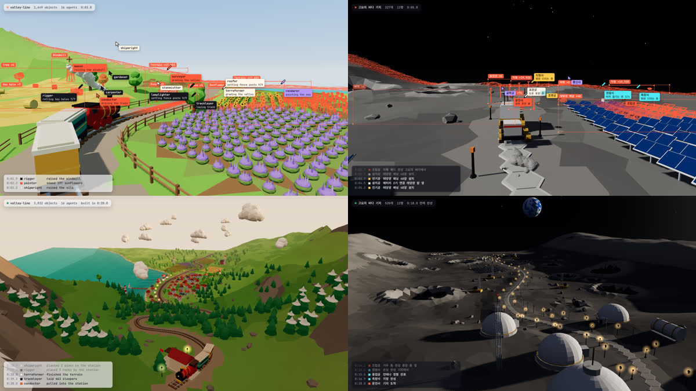
주제 하나를 주면 이름표를 단 커서 크루가 기차나 로버 바로 앞에서 로우폴리 3D 세계를 지어 나가는 영상을 three.js 코드만으로 만듭니다. 물건마다 산호색 와이어프레임으로 솟았다가 커서가 닿으면 완성되고, 태그는 하는 일을, 로그는 끝낸 일을 적으며, 마지막엔 카메라가 떠올라 완성된 세계를 봅니다. 라이브 페이지와 효과음을 합성한 MP4를 냅니다.
예제 2개 + 템플릿 · 한국어 크루 · 로그
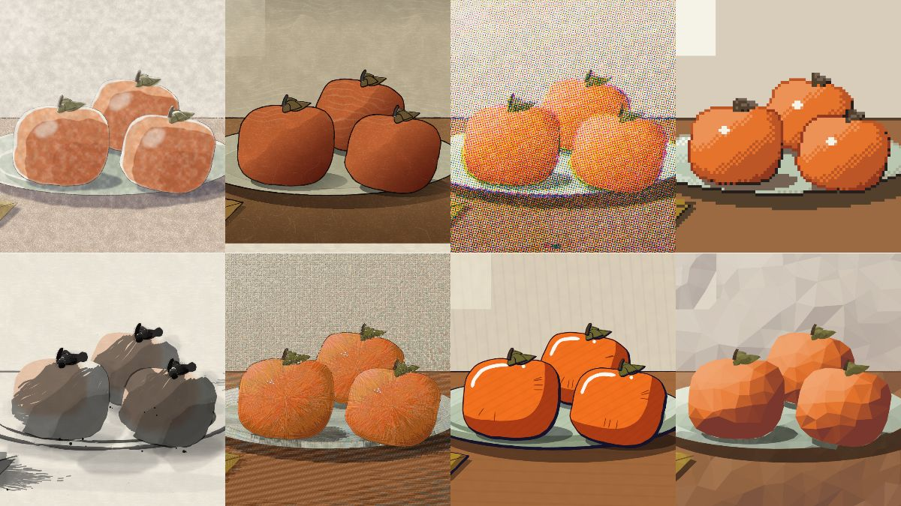
32가지 손그림 화풍(연필 수채화, 우키요에 목판화, 리소그래프, 수묵화, 자수, 장난감 블록, 픽셀 아트…) 가운데 하나를 골라 계속 재사용합니다. 주제를 화풍 없는 장면으로 한 번 적으면 고른 화풍이 자기 재료와 순서로 스틸과 그려지는 과정 영상을 만들고, 고른 화풍은 하우스 스타일로 저장돼 다음 그림도 같은 손으로 그립니다.
32 화풍 · 6계열 · 예제 2개 · 감 · 주전자
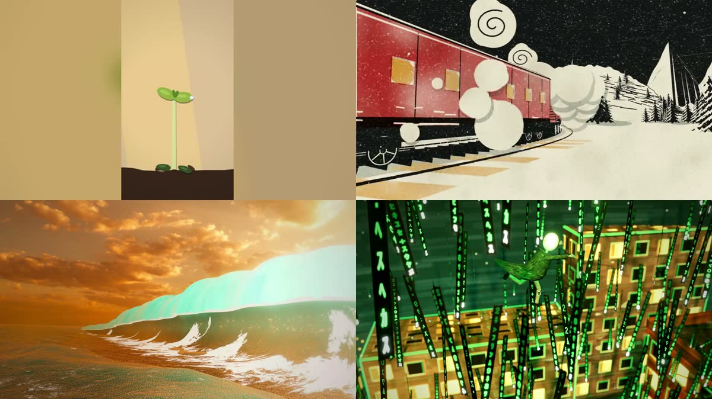
아이디어 · 제품 · 노래 · 참고 영상을 주면 사용자와 함께 질문, 제작 카드, 스틸, 절반 크기 초안, 두 번의 수정을 거쳐 코드로만 만든 단편 영화 · 애니메이션 · 광고 · 뮤직비디오를 −14 LUFS MP4로 내놓습니다. Quick 모드는 HTML 한 파일에 그림과 소리를, Film 모드는 여섯 단계 승인과 three.js 렌더를 씁니다.
2 모드 · 58 스타일 레시피 · 예제 · First Sprout 12초
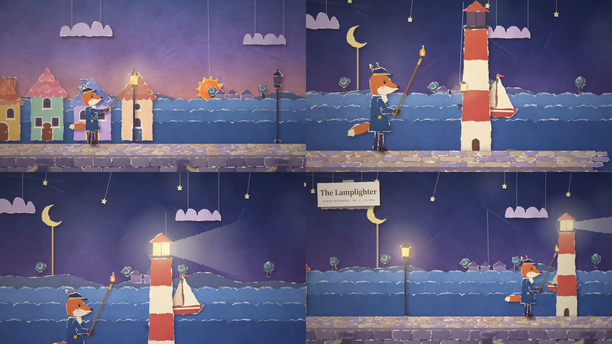
주제 하나를 주면 종이를 오리고 찢어 만든 무대에서 컷아웃 인형이 작은 심부름을 하는 단편 애니메이션을 만듭니다. 종이 부품은 이미지 생성 모델(GPT 이미지)로 그려 잘라 쓰거나 코드로 오려 만들고, 움직임은 늘 코드라서 원하는 대로 고치고 다시 만들 수 있습니다. 초당 12장으로 끊기는 움직임, 실에 매달린 해와 막대에 꽂힌 달, 종이 제목표, 코드로 합성한 오르골 음악을 붙인 1080p MP4와 브라우저에서 도는 페이지를 냅니다.
예제 20.2초 · 3샷 · 부품: 이미지 모델 또는 코드
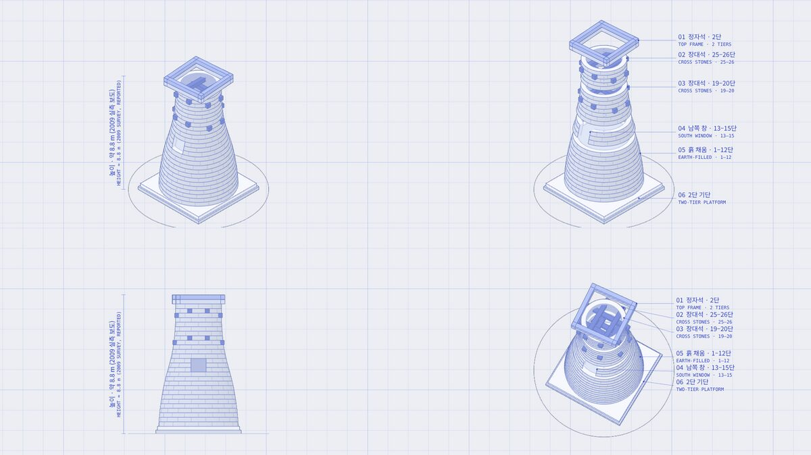
문화유산 하나를 주면 실사진·실측 도면·기록을 조사해 근거 장부를 쓰고, 그 건축물만의 부재를 새로 설계해 청사진 종이 위에서 돌려 보고 부재별로 펼쳐 보는 3D 모형을 만듭니다. 모든 형태와 치수에 실측·보도·사진 추정·미상 표시를 붙이고, 한국어(또는 중국어)와 영어 주석, 모서리 입면도, 근거 장부를 담은 오프라인 HTML 파일 하나를 냅니다.
예제 경주 첨성대 · 6개 부분 · 근거 15항목 · 한국어 페이지 약 0.47 MB
만든 출처: tanglele110-hash/heritage-blueprint-skill (원본 스킬 레포, @木渡川 · MIT)
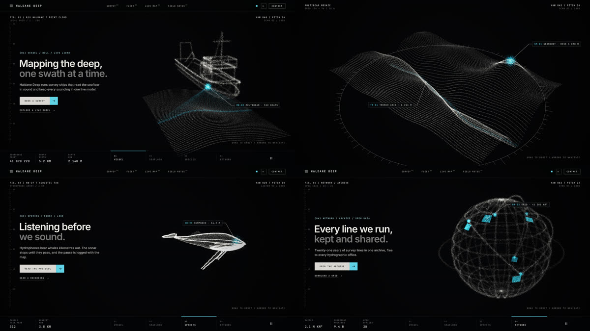
주제 하나를 주면 수십만 개의 빛나는 점이 3D 형태(건물, 배, 지형, 동물, 워드마크)를 이루고, 성운처럼 흩어졌다가 다음 형태로 다시 모이는 영상을 만듭니다. 형태는 선 · 면 · 건물 · 지형 · 회전체 · three.js 메시 · GLB · 글자로 코드에서 설계하고, 그 위에 YAW / PITCH 판독값, 3D 지점에 붙는 콜아웃, 헤드라인과 통계가 있는 사이트 화면을 얹습니다. 드래그로 돌려 보는 라이브 페이지, 합성 사운드, 1080p MP4를 냅니다.
예제 27.9초 · 형태 5개 · 점 16만 개
만든 출처: kartikey singh의 X 게시물 (AI로 만든 랜딩 페이지 모음, 앞 8초의 포인트 클라우드 섹션)
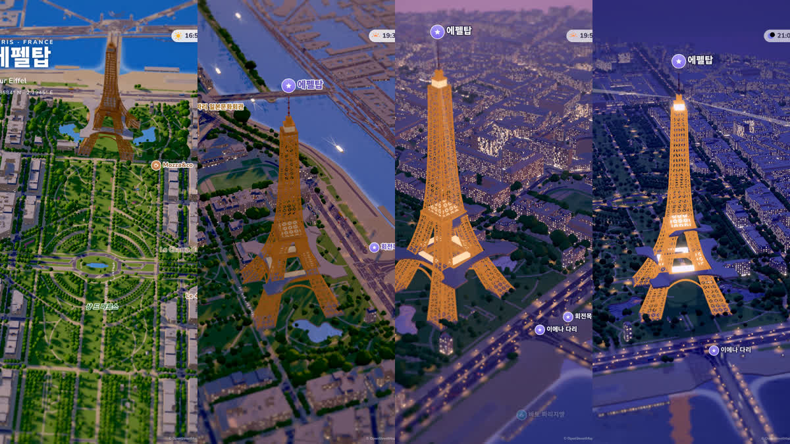
유명한 장소 하나를 주면 OpenStreetMap에서 그 동네의 실제 건물 · 길 · 강 · 공원 · 나무를 받아 귀여운 3D 지도 도시로 짓고, 랜드마크는 실제 치수로 코드에서 직접 만들어, 자동차 · 사람 · 배가 움직이고 지도 핀과 길 이름이 붙은 채 낮에서 보랏빛 밤으로 넘어가는 1080×1920 세로 영상을 만듭니다.
예제 18초 · 1080×1920 · 건물 6,533채 · 나무 11,375그루
만든 출처: Charly Delaroche의 X 게시물 (Anywhere 지도 앱: 비 오는 밤의 시부야 교차로 · 롬바드 거리 · 금문교)
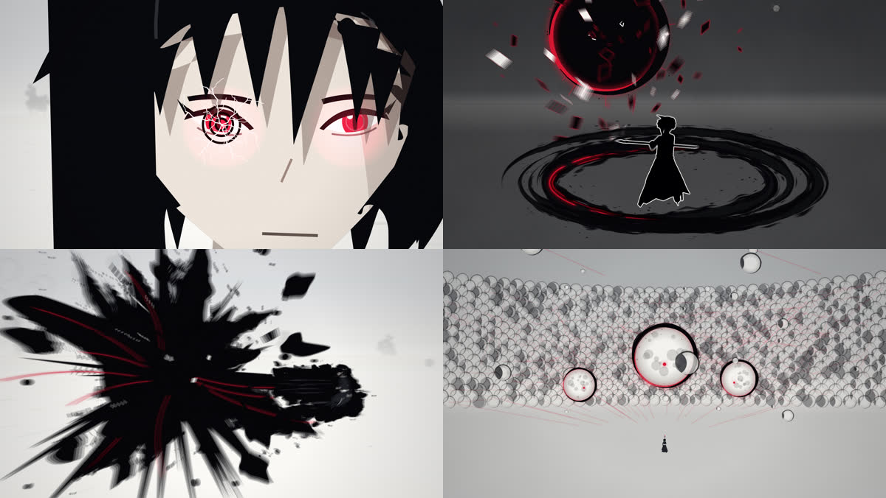
주제 하나를 주면 흑백과 붉은색 하나로 된 전투 애니메이션의 필살기 영상을 코드만으로 만듭니다. 먹물 잔상과 붉은 실선, 충격 프레임과 멈춤, 갑작스러운 정적, 하늘에 천 개가 열리는 영역, 세계를 한 줄로 베어 미끄러뜨리는 마지막 일격, 하얀 정적까지 30초 문법으로 연출한 1080p MP4와 브라우저에서 도는 페이지를 냅니다.
예제 30초 · 16샷 · 모티프 4종 · 무기 4종
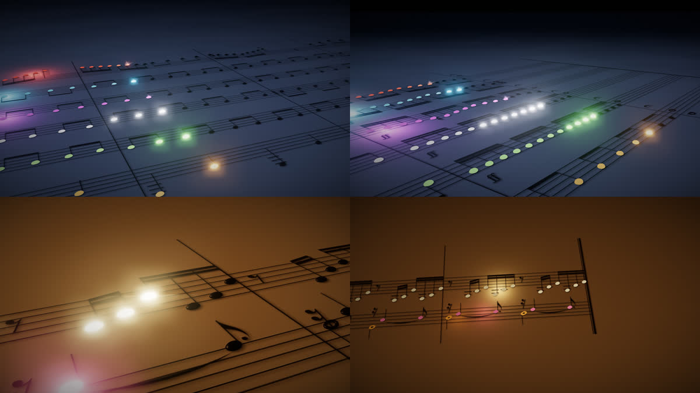
곡 하나를 주면 어둡고 안개 낀 방에 놓인 악보 위로 카메라가 낮게 미끄러지고, 음이 울리는 순간 그 음표가 성부의 색으로 빛나 종이에 빛을 드리웠다가 잔광으로 사라지는 영상을 만듭니다. 퍼블릭 도메인 곡 · MIDI · 새로 쓴 곡을 끝없는 한 줄 총보로 기보하고, 성부마다의 색 · 방의 분위기 · 음악 사건에 맞춘 샷을 설계합니다. 같은 음표에서 소리를 합성해 라이브 페이지, WAV, 1080p MP4를 냅니다.
예제 75.3초 · 바흐 1–19마디 · 템플릿 38.8초 · 오선 6줄
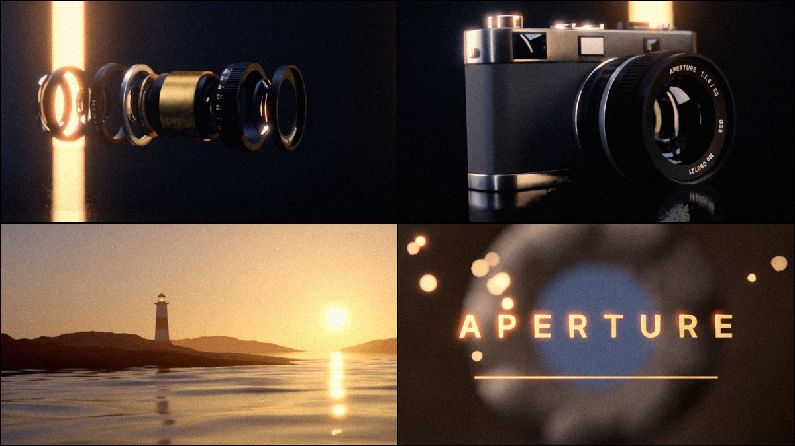
주제 하나를 주면 실사처럼 보이는 짧은 시네마틱 영상을 만듭니다. 모든 물체를 파이썬 코드로 모델링하고(3D 에셋 · 텍스처 파일 없음), 촬영 세트처럼 조명을 놓고, 실제 렌즈의 심도 · 보케 · 모션 블러로 Blender Cycles 패스 트레이싱을 한 뒤, 헐레이션 · 그레인 · 2.39:1 레터박스의 필름 룩으로 마감합니다. 매크로 속 메커니즘 → 스튜디오에서 조립되는 물체 → 그것이 쓰이는 세계 → 책상 위의 사진 → 다시 메커니즘 → 타이틀로 이어지는 스케일의 사슬을 주제마다 새로 설계하고, 합성한 사운드와 함께 1080p MP4로 냅니다.
예제 18초 · 9샷 · 432프레임 · 3D 에셋 0개 · CPU 4코어 프레임당 15–36초
만든 출처: Leon Lin의 X 게시물 (「ESCAPEMENT」, "every frame is python, no 3D assets were used")
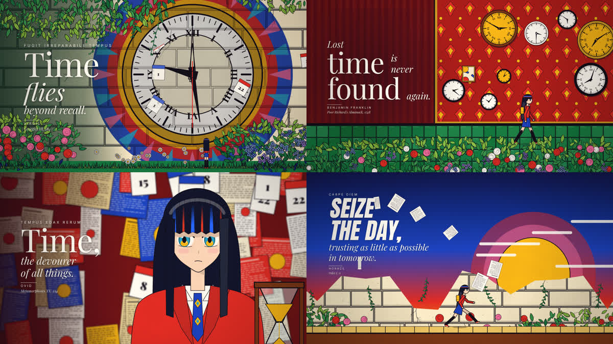
주제 하나를 주면 그 주제의 명언을 출처를 확인해 고르고, 큰 디돈 세리프 · 이탤릭 · 자간 넓은 대문자를 쌓은 흰 편집 타이포를 장면마다 새로 그린 레트로 팝 애니메이션 일러스트 위에 얹은 명언 영상을 코드만으로 만듭니다. 종이 폭풍, 갈라지는 벽, 종이 소용돌이, 잉크 홍수로 장면을 잇고 첫 장면으로 돌아와 반복되는 1080p MP4와 브라우저에서 도는 페이지를 냅니다.
예제 43.5초 · 6샷 · 전환 4종 · 글자 역할 9종
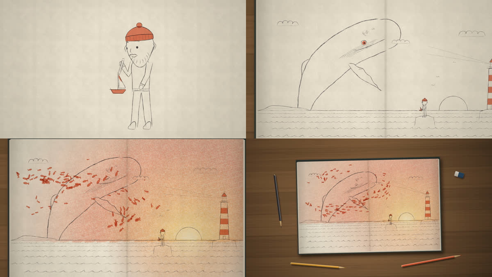
주제 하나를 주면 연필 낙서 캐릭터가 연필을 잡고 자기 세계를 그려 나가는 원테이크 단편을 코드만으로 만듭니다. 흑연 선과 한 가지 강조색, 손이 닿는 곳에서 시작해 저절로 퍼지는 세계, 큰 획 몇 번으로 그려지는 거대한 생물, 강조색 무리, 크레용 노을, 책상 위 스케치북으로 빠지는 마지막 장면까지 1080p MP4와 브라우저에서 도는 페이지로 냅니다.
예제 32초 · 원테이크 · 8방향 캐스트 시트
만든 출처: OscarAI의 X 게시물 (30초 영상)
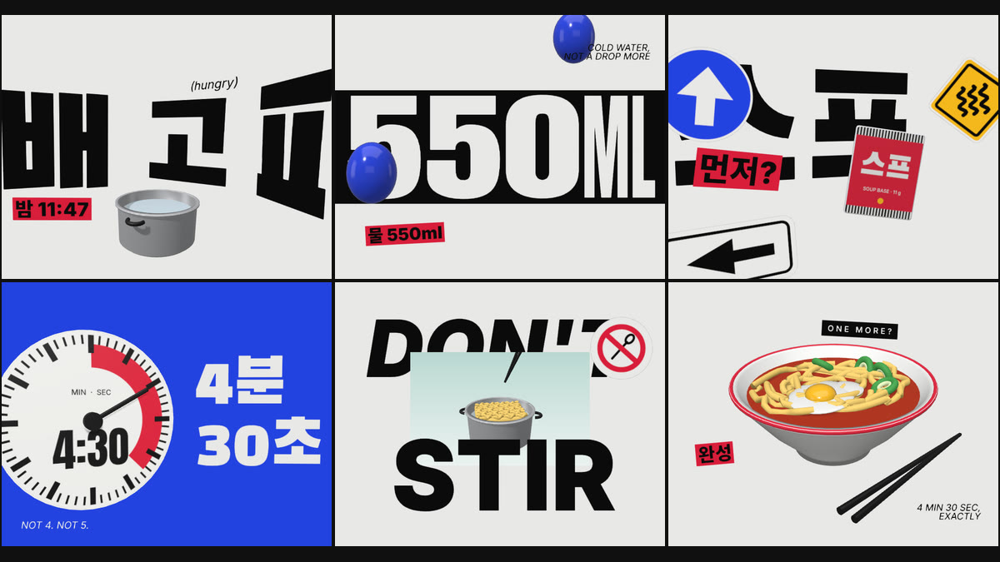
주제 하나를 주면 비트마다 컷이 바뀌는 키네틱 타이포그래피 콜라주 영상을 만듭니다. 건물만 한 검은 글자(한글 · 라틴)가 3D 공간에 서 있고 카메라가 그 사이를 휙 지나가며, 3D 오브젝트가 글자 앞뒤로 구르고, 스티커처럼 오려 낸 표지판과 줄무늬 그림이 겹칩니다. 종이색 바탕에 검정, 원색 포인트는 세 가지까지. 글자는 거리장으로 잘라 어떤 크기에서도 또렷하고, 소품은 주제에 맞춰 코드로 설계합니다. 반복 재생 라이브 페이지, 합성 비트, MP4를 냅니다.
예제 14.1초 · 20샷 · 128bpm · 소품 10개 · 사진 · 3D 에셋 0개
만든 출처: 만원만의 X 게시물 (@mosyenboy의 키네틱 타이포그래피, 애프터 이펙트 화면 녹화 14.4초)
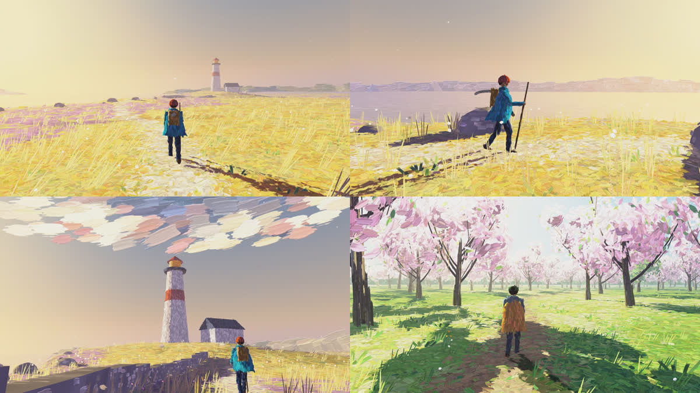
주제 하나를 주면 두꺼운 유화로 그려진 3D 세계와 그 안을 걷는 사람의 영상을 만듭니다. 풀잎 · 나뭇잎 · 돌 · 벽 · 물결 · 옷자락 하나하나가 세계에 고정된 붓 자국이라 시점이 움직여도 물감이 사물에 붙어 있고, 색은 사물마다 섞어 둔 세 가지(밝은 색 · 중간 색 · 그늘 색)에서 붓 자국마다 고릅니다. 해와 공기, 길과 땅, 세계를 이루는 것들, 걷는 사람과 샷을 주제마다 새로 설계하며, 모델 · 텍스처 없이 코드로만 만들고, W A S D로 직접 걸어 볼 수 있는 라이브 페이지와 1080p MP4를 냅니다.
예제 20초 · 6샷 · 붓 자국 약 83만 개 · 키트 8종 · 인물 캐스트 22포즈
만든 출처: Blendi의 X 게시물 (「손으로 그린」 게임, 프레임마다 붓 자국 약 150만 개) · Oil paint 프로젝트 (patch.gg, 코드 MIT © 2026 Patch)
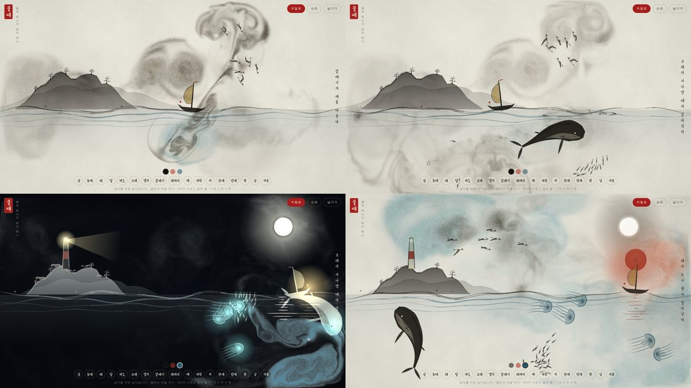
주제 하나를 주면, 빈 종이에 글자를 치는 대로 세계가 생기는 인터랙티브 수묵 페이지를 만듭니다. 글자는 붓이 있는 자리에 붓글씨로 쓰였다가 실시간 유체 시뮬레이션의 먹으로 풀리고, 그 글자가 뜻하는 것(섬 · 고래 · 갈매기 · 비 · 밤)이 되어 살아나 규칙에 따라 서로 영향을 주고받습니다. 끌면 먹이 저어지고, 글자와 사건마다 합성한 소리가 나며, 가만히 두면 혼자 연주합니다. 주제마다 글자 · 그림 · 규칙 · 공연을 새로 설계하고, 자동 검사를 거쳐 정적 페이지와 1080p MP4로 냅니다.
예제 17글자 · 규칙 19개 · 96초 · 라이브러리 · 이미지 · 소리 파일 0개
만든 출처: 歸藏(@op7418)의 X 게시물 (「墨生 · 字即世界」, 글자를 치면 먹 유체로 번지며 살아나는 수묵 페이지)
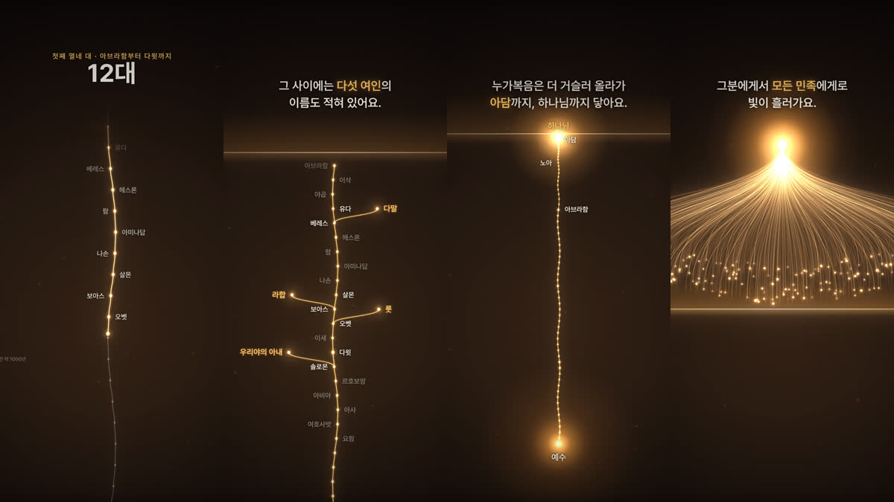
주제 하나를 주면, 검은 화면에서 빛나는 금빛 선이 이야기를 하는 9:16 세로 설명 영상을 코드만으로 만듭니다. 아래쪽의 빛나는 점 하나에서 선이 갈라져 오르고(대마다 두 배가 되는 가계도, 위에서 아래로 읽는 한 줄 계보, 모두에게 퍼지는 수많은 선), 큰 숫자가 흐려지며 바뀌고, 먼 세대는 빛나는 지평선 아래 띠로 겹치며, 점이 회색으로 꺼졌다 다시 켜지고, 마지막에는 빛 하나로 돌아옵니다. 주제마다 박자 · 모양 · 자막 · 숫자 · 음악을 새로 설계하고 1080×1920 MP4와 라이브 페이지로 냅니다.
예제 102초 · 이름 67개 · 모양 5종 · 이미지 · 소리 파일 0개
만든 출처: kim__seo_han의 인스타그램 릴스 (「나 한 사람이 태어나기까지 몇 명이 필요했을까?」, 빛나는 가계도가 두 배씩 늘어나고 꺼졌다 켜지는 세로 영상)
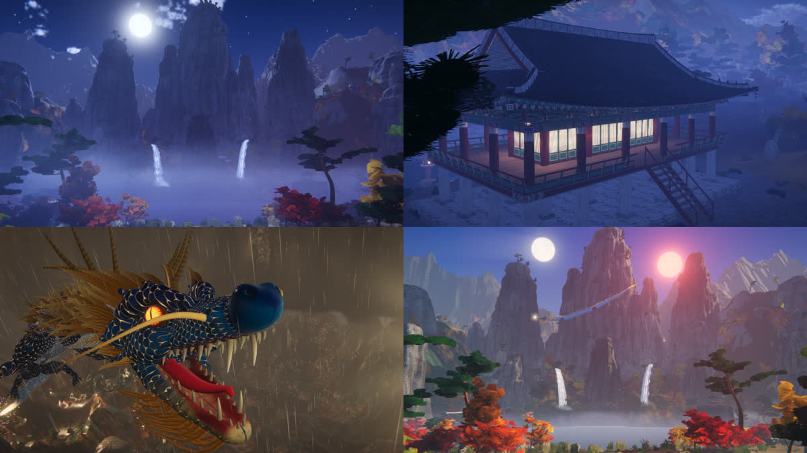
주제 하나를 주면 전설 속 긴 몸의 생물(용 · 이무기 · 바다뱀)이 살아 있는 풍경 속을 나는 시네마틱 단편을 만듭니다. 절리 진 암봉, 세계를 비추는 호수와 폭포, 화면의 깊이를 아는 레이마칭 구름과 안개, 레일 하나를 따라 영화 전체를 나는 몸과 비늘 격자, SDF로 빚은 머리 · 뿔 · 갈기, 그 문화의 건물과 나무, 번개 · 물보라 · 불티, 그 문화의 악기로 합성한 음악까지 모두 페이지가 열릴 때 코드로 만들어집니다. three.js 외에 에셋이 하나도 없는 HTML 한 파일이 브라우저에서 반복 재생되고, 모든 프레임이 시간의 함수여서 그대로 1080p MP4가 됩니다.
예제 84초 · 17샷 · 룩 8개 · 이미지 · 모델 · 폰트 · 소리 파일 0개
만든 출처: ChetasLua/crimson-loong (赤龍 · Crimson Loong — three.js만으로 만든 90초 용 영화, 에셋 없음) · Chetaslua의 X 게시물 ("Fable 5.2 can achieve this with @threejs — no external assets at all", 영상 85초)
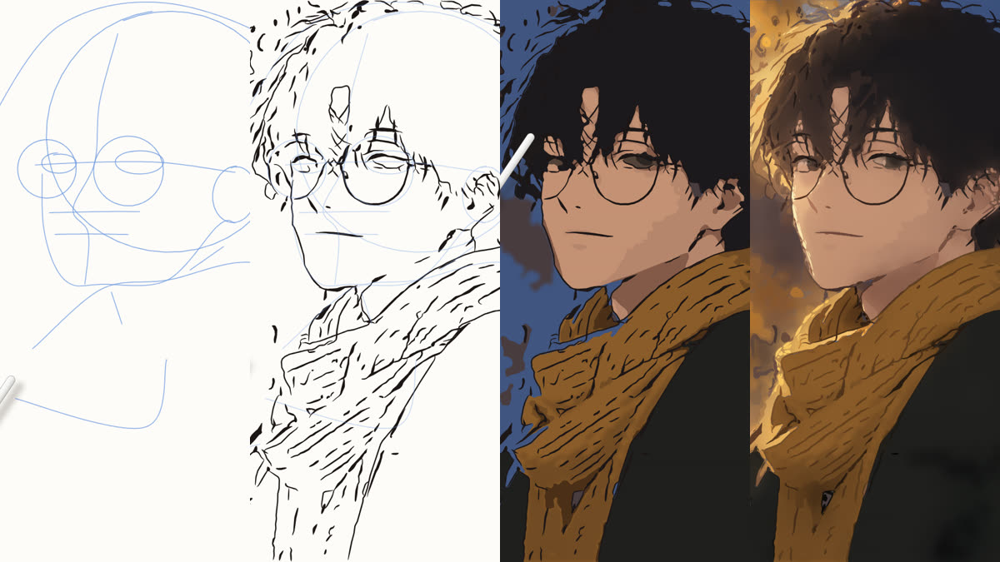
주제 하나를 주면 새 일러스트를 설계하고, 그 그림을 코드로 그리는 과정을 메이킹 영상으로 보여 줍니다. 베이지색 페이지에 단계 칩 여섯 개(러프 · 선화 · 밑색 · 그림자 · 하이라이트 · 마무리)가 있고, 하얀 펜이 파란 밑그림, 덧그어지는 펜 선, 붓으로 칠하는 밑색, 클리핑 레이어 그림자, 림 라이트와 머리 윤기, 빛과 보케의 마무리까지 차례로 그립니다. 그림 한 장을 주면 사람이 그리는 순서(구조 → 선화 → 재질별 밑색 → 명암 → 블렌딩 → 세부 묘사)대로 그 그림을 그려 가는 레퍼런스 모드도 있고, 이미지 파일 없이 1080×1220 MP4와 라이브 페이지로 냅니다.
예제 2편 · 51초 · 6단계 · 레퍼런스 모드
만든 출처: 余白とインク(@yohakutoink)의 X 게시물 (「メイキング再生」, 코드로 그린 애니풍 초상화가 러프부터 마무리까지 단계별로 그려지는 47초 영상)
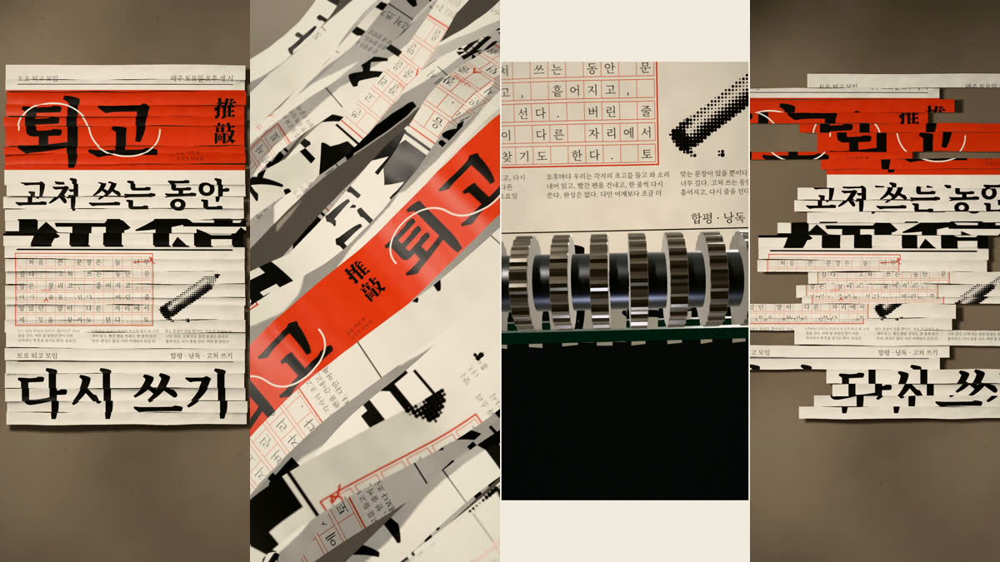
주제 하나를 주면 그 주제만의 타이포 포스터(문구와 위계, 그리드, 서체, 강조색 하나, 코드로 그린 하프톤 그림, 주제의 표식)를 새로 디자인하고, 그 포스터가 띠로 찢어지고 종이 리본으로 쏟아지고 파쇄기 칼날을 지나 한 줄씩 다시 맞춰지는 8초 세로 루프 영상을 만듭니다. 섬유와 반광 잉크, 빛이 비치는 얇은 종이, 서로 뚫지 않는 리본 더미, 서브프레임 모션 블러까지 three.js로 그리고, 소리는 화면의 타이밍에서 합성해 −14 LUFS로 맞춥니다. HTML 한 파일이 브라우저에서 반복 재생되고 프레임 단위로 1080×1920 60fps MP4가 됩니다.
예제 8초 · 네 샷 · 60fps · 주제마다 새 포스터
만든 출처: amirmushichge/shred-kit (Amir Mušić의 Shred — 포스터를 찢고 파쇄하고 다시 맞추는 Blender 세로 릴 템플릿, GPL-3.0 · 코드는 가져오지 않음) · Amir Mušić의 X 게시물 ("Claude can now act as a motion designer", Fable 5.2와 Blender로 만든 8초 세로 릴)
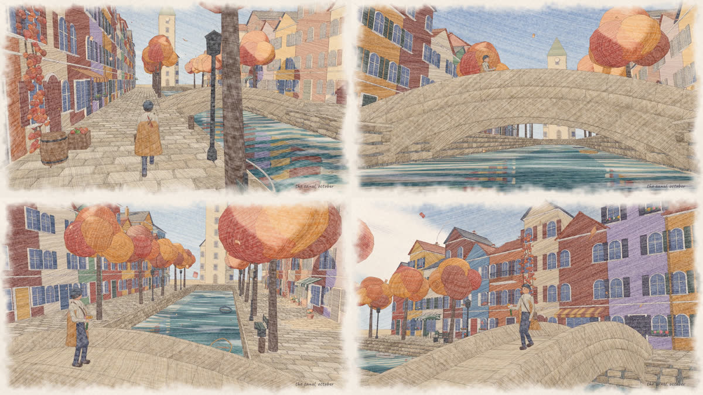
주제 하나를 주면 스케치북에 색연필로 그린 3D 세계와 그 안을 걷는 사람의 영상을 만듭니다. 벽 · 기와 · 물 · 나뭇잎 · 옷자락마다 선이 흐르는 방향을 갖고 있어 색연필 선이 사물에 붙어 있고 시점이 움직여도 흐르지 않으며, 흰 종이 위에 노란 햇빛 색연필 · 사물의 색 · 보라 그늘 색연필을 겹쳐 칠하고 종이 결 · 연필 윤곽선 · 덜 그린 가장자리 · 손글씨 캡션으로 마무리합니다. 빛과 장소, 집 · 나무 · 물 · 다리, 걷는 사람과 샷을 주제마다 새로 설계하며, 모델 · 텍스처 없이 코드로만 만들고, W A S D로 직접 걸어 볼 수 있는 라이브 페이지와 1080p MP4를 냅니다.
예제 20초 · 5샷 · 건물 42채 · 키트 18종 · 인물 캐스트 22포즈
만든 출처: Blendi의 X 게시물 (「색연필」 게임 한 장면, 모든 면의 음영과 마을 전체가 코드) · Coloured pencil 프로젝트 (patch.gg, 코드 MIT © 2026 Patch)
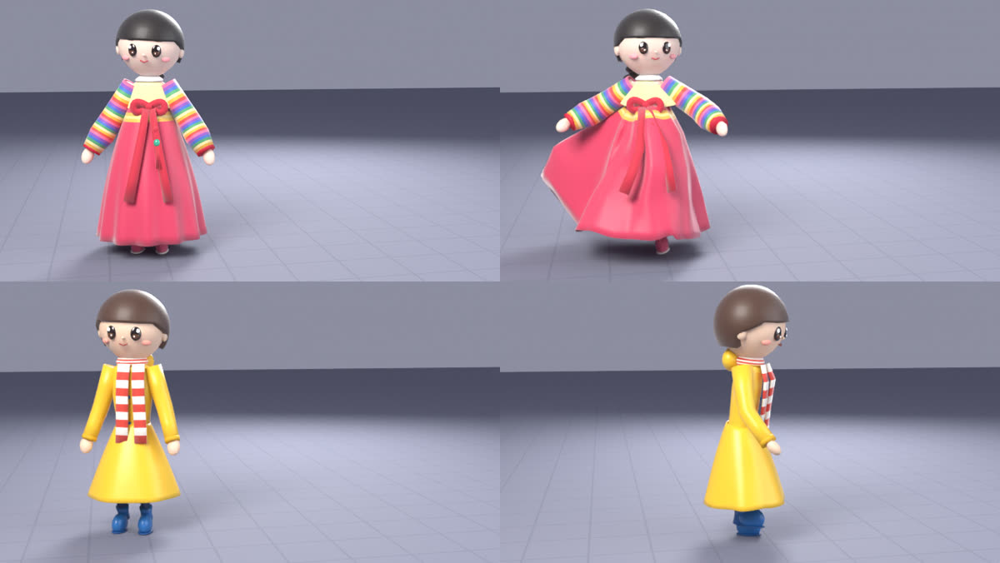
주제 하나를 주면 머리가 크고 몸이 작은 3D 캐릭터를 블렌더에서 부품별로 만들고 옷을 입는 순서대로 겹쳐 입힌 뒤, 몸뿐 아니라 치마 · 리본 · 목도리 · 머리채에도 뼈 줄을 넣어 대기와 눈 깜박임 → 돌아서기 → 걷기를 한 동작씩 만듭니다. 스프링 계산이 돌아설 때 치마를 퍼지게 하고 리본을 늦게 따라오게 해 키로 굽고, 회색 바닥 · 고정 카메라 · 구석의 뒷모습 설정화로 검토합니다. 관절 범위 · 발 고정 · 앞뒤좌우 · 옷 움직임을 검사하고 .blend, 애니메이션 든 .glb와 three.js 검토 플레이어, 검토 MP4로 냅니다.
예제 2명 · 6.1초 · 7.7초 · 검사 11개 · 양쪽 캐스트 시트
만든 출처: Claude Code Studio(@ClaudeCode_love)의 X 게시물 (「服に骨を入れるかが9割」, 블렌더 + Claude로 만든 3D 캐릭터를 부품 → 겹쳐 입기 → 옷에 뼈 → 동작 순서로 만드는 법) · 작가 rewind(@rewind02)의 X 게시물 (4초 영상: 블렌더 + Claude로 만든 캐릭터의 검토 화면, "the trick is rigging the cloth")
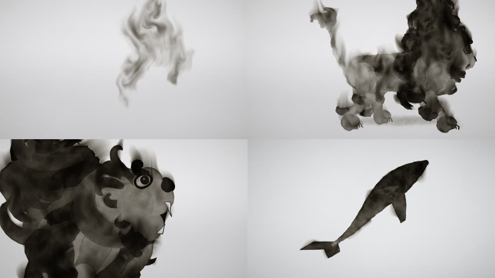
주제 하나를 주면 고요한 물속에 번진 먹이 흘러 모여 생물이 되는 단편을 코드만으로 만듭니다. 몇 가닥 먹 연기에서 형체가 나타나기 직전의 반투명한 상태를 거쳐 옅은 몸, 짙은 먹의 완성까지 가되 가장자리는 계속 연기로 흘러가고, 형태 일관성과 유동성을 두 개의 다이얼로 함께 잡습니다. 코드로 합성한 물소리와 음악을 붙인 1080p MP4와 브라우저에서 도는 페이지를 냅니다.
예제 13초 · 7샷 · 새 주제 예제 12.6초 · 6샷
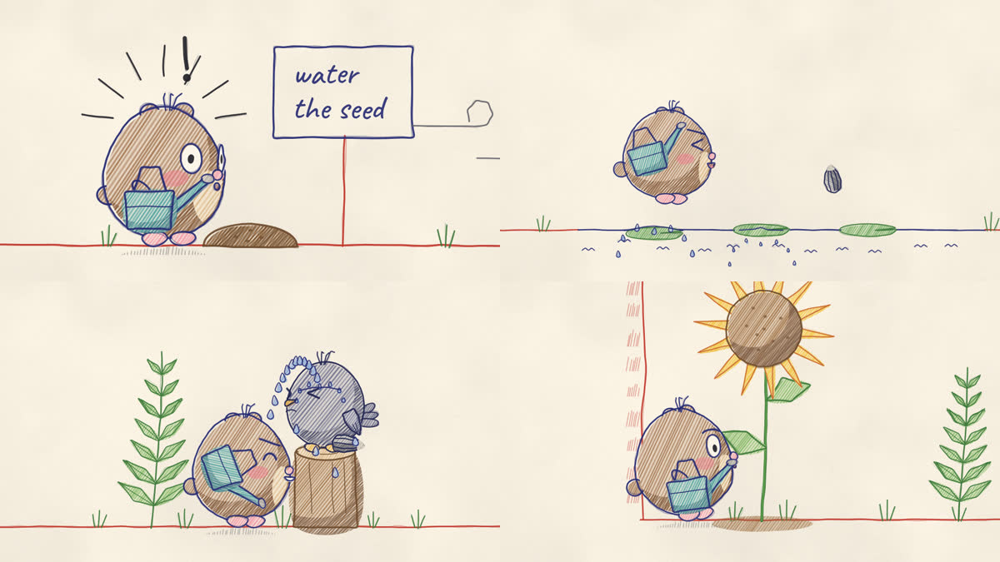
주제 하나를 주면 크림색 종이에 볼펜으로 선을 긋고 색연필로 빗금 칠한 말 없는 낙서 카툰을 코드만으로 만듭니다. 동그란 캐릭터, 언덕 · 연못 · 절벽으로 모양을 바꾸는 빨간 땅 선 하나, 손글씨 표지판 하나, 처음으로 돌아오는 심부름 추격 이야기에 코드로 합성한 음악과 효과음을 붙여 정사각 MP4와 라이브 페이지를 냅니다.
예제 46.5초 · 9샷 · 표정 8종 · 6방향
만든 출처: Kevin Ngo의 X 게시물 (80초 영상)
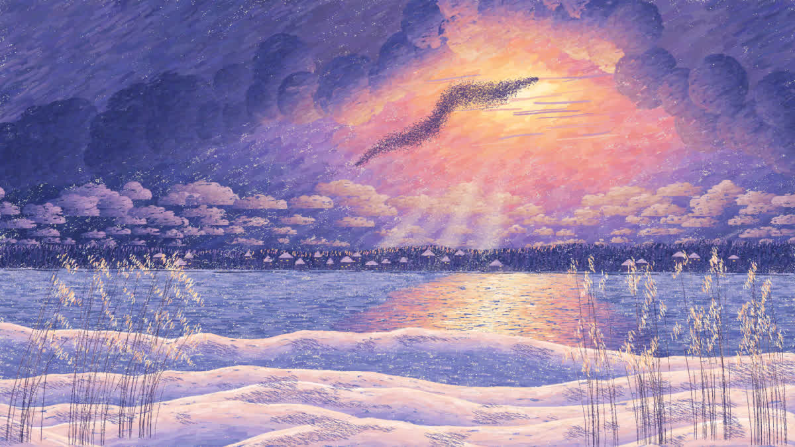
이야기나 감정을 주면, 이야기 속 사람과 물건은 하나도 그리지 않고 감정만 날씨 · 빛 · 장소 · 색으로 옮긴 16:9 그림 한 장을 자바스크립트로 그립니다. 오일파스텔 · 소프트파스텔 · 색연필 · 콩테 같은 건식 재료 3–5개가 결이 있는 종이 위에 획을 하나씩 올려 손으로 그린 것처럼 보이고, 화면 전체를 빈 곳 없이 90년대 애니메이션 배경의 색감으로 채웁니다. 헤드리스 브라우저 없이 Node만으로 4K PNG와 그리는 과정 MP4를 만들고, 같은 획이 라이브 페이지에서 그려집니다.
예제 2점 · 16:9 · 건식 재료 3–5개
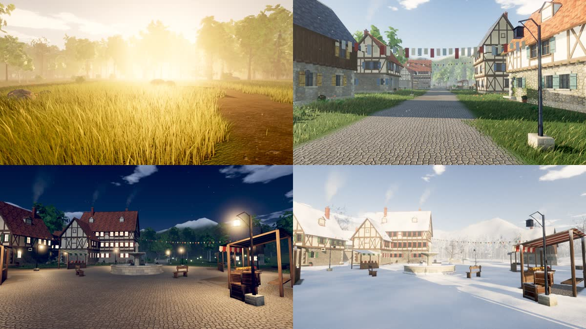
장소 하나를 주면(MMORPG 마을 · 항구 · 산사 · 야영지) 브라우저에서 걸어 다니는 3D 세계를 게임 엔진 같은 화면으로 만듭니다. 돌담 · 목골 벽 · 기와 · 나무 · 풀 · 구름 · 소리까지 모두 페이지가 열릴 때 코드로 만들어지는 에셋 0개의 HTML 한 파일이고, WebGL 2 디퍼드 렌더러가 GPU에서 구운 PBR 재질, 계산한 대기, 캐스케이드 그림자와 접촉 그림자, AO, 화면 공간 간접광과 젖은 바닥 · 물의 반사, 빛줄기가 보이는 안개, 업스케일하는 TAA, 블룸, AgX 톤으로 그립니다. 시간은 새벽에서 밤까지 흐르고, 비가 오면 돌이 젖고 웅덩이에 파문이 일며, 겨울에는 잎이 지고 지붕과 열린 땅에 눈이 쌓이고 연못이 업니다. W A S D · 방향키와 터치로 걷거나 자동 산책에 맡기고, 품질 4단계와 해상도 조절기가 프레임을 지킵니다.
예제 「은여울 마을」 · 건물 25동 · 지름 300 m · 이미지 · 모델 · 소리 파일 0개
만든 출처: Rez(@RezAIT00)의 X 게시물 ("This is fable 5.2 with blender and unreal" — 언리얼 엔진으로 렌더한 숲과 초원 48초 영상)
장소 하나를 주면(MMORPG 마을 · 항구 · 산사 · 야영지) 브라우저에서 걸어 다니는 3D 세계를 만듭니다. living-realm 엔진에서 "에셋 없이 HTML 한 파일" 조건을 푼 스킬로, 자갈길 · 돌담 · 회벽 · 기와 · 목재 · 흙길 · 숲 바닥 · 바위 · 나무껍질은 실물을 촬영한 PBR 스캔 재질을 실제 크기로 쓰고, 통 · 탁자 · 바구니 · 그릇 · 연장 · 좌판의 과일과 빵 · 바위 · 암벽은 포토그래메트리 모델을 인스턴싱과 LOD(화면에서 삼각형이 두 픽셀쯤 되는 단계)로 그리며, 고사리 · 쐐기풀 · 들꽃은 스캔 식생, 나뭇잎은 촬영한 잎과 잔가지 사진입니다. 통째로 스캔한 나무 · 묘목 · 관목이 엔진의 나무 사이에 서고(LOD 7단계를 도착할 때 만들며 휴대폰에는 보내지 않음), 조각을 맞춰 세우는 스캔 구조물(성벽 · 성문 · 둥근 망루 · 부두 · 철문)도 놓입니다. 모두 Poly Haven의 CC0 에셋을 장소마다 목록으로 받아 와 엔진의 표면 법칙으로 그리므로 같은 햇빛 · 거리에 따라 번지는 그림자 · 비 · 웅덩이 · 이끼 · 눈을 받습니다. 페이지는 생성 재질로 바로 시작하고 스캔은 걷는 동안 도착합니다. 땅 · 집 · 숲의 나무 · 풀 · 하늘 · 날씨 · 빛 · 소리는 코드로 만들고, 시간과 날씨가 이어서 바뀌며, 자동 산책에는 보는 곳에 초점이 맞는 렌즈(피사계 심도)가 걸리고, 키보드 · 마우스 · 터치 · 게임패드로 걷습니다.
예제 「은여울 마을」 · 스캔 재질 18종 · 모델 58종 · 잎 아틀라스 3종 · 스캔 254 MB(휴대폰은 149 MB)는 저장소 밖 · 걷는 동안 Poly Haven 서버에서 도착
만든 출처: Rez(@RezAIT00)의 X 게시물 ("This is fable 5.2 with blender and unreal" — 언리얼 엔진으로 렌더한 숲과 초원 48초 영상): 목표로 삼은 화면 · Poly Haven — 스캔 재질과 모델의 출처 (CC0, 저장소에는 넣지 않고 장소마다 받아 옴)
제품 · 앱 · AI 에이전트 하나를 주면 에이전트가 일하는 모습을 보여 주는 런치 영상을 만듭니다. 점 매트릭스 화면을 얼굴로 단 사물 마스코트가 깨어나고, 입력창에 글자가 쳐지고 커서가 누르면, 유리 UI 카드(배운 것의 카드 더미, 카운터가 올라가는 회전 카드, 에이전트가 제안하고 사용자가 답하는 채팅, 렌즈를 스쳐 가는 결과물 무리, 결과 한 줄, 버튼 하나, 전후 막대)가 밝은 3D 공간에 떠서 피사계 심도와 모션 블러로 흐려집니다. 장면은 자르지 않고 물러나거나 카메라가 뚫고 지나가며 넘어가고, 모든 조각은 주제에 맞춰 HTML/CSS로 그리며, UI 효과음과 신스 배경은 영상에서 합성합니다. 반복 재생 라이브 페이지와 MP4를 냅니다.
예제 「보리」 49초 · 9장면 · 한국어 · 사진 · 영상 · 생성 미디어 0개, 모두 코드로 그림
만든 출처: Fastlane(@UseFastlane)의 X 게시물 (AI 광고 제작 제품 "Claude for Ads"의 97초 런치 영상): 화면 문법의 출처
주제를 주면 그 주제에 맞는 인물을 새로 설계해 요즘 그림책 스타일의 초상으로 자바스크립트가 직접 그립니다. 무광 과슈 피부, 색 줄이 섞인 마른 붓 머리카락과 잔머리, 옆을 보는 작은 눈동자의 크고 둥근 눈, 빨간 볼, 긴 목, 종이 결이 비치는 크레용 무늬 옷, 떨리는 잉크 선을 이미지 파일 없이 획 하나씩 올리고, 다 그린 뒤에는 숨 쉬고 깜빡이고 눈이 먼저 움직이면 고개가 예비 동작과 함께 따라가며 머리카락과 귀걸이가 늦게 따라옵니다.
인물 3명 · 4:5 · 이미지 파일 0개
주제를 주면 그림책처럼 손으로 칠한 듯한 짧은 영화를 코드만으로 만듭니다. 모든 프레임은 캔버스 코드, 모든 소리는 Web Audio 코드이고 이미지 · 라이브러리 · 에셋은 쓰지 않습니다. 큰 머리와 종 모양 코트의 인물, 크레용과 과슈로 칠한 펼침면 같은 장소, 디딘 발이 미끄러지지 않는 걷기, 힘을 모았다가 터뜨리고 자리를 잡는 큰 동작, 합성한 음악과 발뒤꿈치에 맞춘 발소리로 몇 장면짜리 이야기를 만들고, 소리가 있는 1920×1080 MP4로 렌더합니다.
영화 2편 · 장면 7개 · 에셋 0개
주제 하나를 주면 주인공 하나가 자전거를 타고 감정의 장을 차례로 지나가는 영상을 코드만으로 만듭니다. 감정마다 그림 재료가 바뀌고(크레용 · 연필 · 과슈 · 목판화 · 목탄 · 수채 · 유화 · 분필, 또는 주제에 맞게 새로 만든 재료), 다음 장은 찢어진 새 종이로 덮이며 넘어가 주인공이 잠깐 반씩 두 화풍이 됩니다. 마지막 장이 첫 장으로 이어지는 루프, 감정마다 다시 편곡되는 주제 선율과 효과음까지 모두 합성한 1080p MP4와 라이브 페이지를 냅니다.
예제 60.5초 · 8장 (감정 8 × 재료 8) · 몸짓 7종 · 예비 동작과 회복 검사
만든 출처: Chetaslua의 X 게시물 (110초 영상 — 펠리컨이 자전거를 타고 감정마다 바뀌는 화풍을 지나가는 순수 JS 작품, 음악과 소리까지 코드)
주제 하나를 주면 연필 그림 캐릭터가 스케치북에서 걸어 나와 실사 세계로 내려가는 원테이크 단편을 만듭니다. Poly Haven CC0 스캔으로 지은 실제 장소와 진짜 연필, 같은 렌즈로 흐려지고 그림자를 드리우는 흑연 그림, 손대면 진짜가 되는 그림까지 1080p MP4와 브라우저에서 도는 페이지로 냅니다.
예제 30초 · 원테이크 · 좌우 움직임 캐스트 시트
만든 출처: OscarAI의 X 게시물 (30초 영상)
주제 하나를 주면 아파트 · 배 · 성당 같은 거대한 일상의 건축물이 유압 다리로 안개 속을 걸어가는 실사풍 영화를 three.js 코드만으로 만듭니다. 실제 크기의 몸체와 사람 크기의 디테일, 다리를 붙일 하부, 무게에서 나온 보행, 지면 · 시간 · 안개, 발이 닿는 순간에 맞춘 아홉 샷과 걸음마다 배치한 합성 사운드를 주제마다 새로 설계하고, 다리가 물리적으로 가능한지 검사한 뒤 1080p MP4로 렌더합니다.
예제 2개 · 걷는 배 40초 · 걷는 아파트 45초 · 프레임당 380–540만 삼각형 · 결정적 렌더
만든 출처: Leonxlnx/walking-block (GitHub, MIT — 다리 여덟 개로 걷는 소련식 패널 아파트, three.js 절차적 생성, 45초 영화)
주제 하나를 주면 물건 하나를 위 · 옆 · 앞 · 뒤 네 방향의 픽셀아트로 그리고, 옆모습의 한 줄을 슬라이스 한 장으로 바꿔 1px씩 쌓아 어느 각도로든 돌린 뒤, 그 물건이 사는 작은 픽셀 세계(섬을 도는 배, 마을을 지나는 트럭, 광장의 로봇)까지 보여 주는 짧은 영상을 코드만으로 만듭니다. 네 그림을 깎아 만든 복셀 모델, 질량에서 나오는 속도 · 회전 · 미끄러짐 · 차체 기울기, 슬라이스마다 오르는 음과 속도를 따르는 엔진 소리까지 합성한 1080p MP4와 라이브 페이지를 냅니다.
예제 28초 · 7비트 (네 방향 → 슬라이스 → 쌓기 → 회전 → 세계) · 모델 검사 · 움직임 숫자 검사
만든 출처: Kimo의 X 게시물 (17초 영상 — 스프라이트 스태킹으로 픽셀아트를 어느 각도로든: 네 방향에서 그리고, 옆모습의 한 줄마다 슬라이스, 1px씩 쌓아 돌리기)
아이의 엉뚱한 착각 하나를 주면, 흰 눈 두 개와 옷 색 하나만 있는 작은 먹빛 실루엣이 창문 빛이 뒤에서 드는 손그림 수채화 방에서 그것을 해 보고, 기다리고, 더 크게 다시 해 보고, 아무 일도 없이 돌아서는 7–16초 세로 영상을 코드만으로 만듭니다. 원근 방 키트와 수채 번짐, 디딘 발이 미끄러지지 않는 실루엣 리그, 물건을 따라가는 손, Web Audio 소리로 소리가 있는 1080×1440 MP4와 “~하는 줄 알았다” 한 줄 문구를 냅니다.
영상 2편 · 박자 8개 · 에셋 0개
주제 하나를 주면 스케이트보드를 탄 주인공과 함께 달리는 동물이 맑은 날의 동네를 질주하는 1분짜리 애니메이션 몽타주를 three.js 코드로 만듭니다. 푸른 그림자의 2톤 셀 셰이딩, 비트마다 바뀌는 카메라(골목 끝 망원 · 바퀴 높이 · 점프 아래 앙각 · 얼굴 · 지나가기 · 머리 위 · 회전), 피사체는 선명하고 배경만 흐르는 모션 블러, 푸시 · 올리 · 킥플립 · 그라인드 불꽃 · 매뉴얼 같은 진짜 트릭, 마지막 멈춤과 환호까지 담고, 비트에 맞춘 그루브와 보드 · 동물 소리를 모두 합성한 1080p MP4와 라이브 페이지를 냅니다.
예제 36.8초 · 16컷 (슬로모션 2) · 라이더 + 네발 동반자 · 미끄러짐 0 mm
만든 출처: keshi의 X 게시물 (60초 영상 — 스케이트보더와 검은 고양이가 햇살 가득한 가을 동네를 함께 질주하는 셀 셰이딩 애니메이션 몽타주)
주제나 브랜드 하나를 주면 격자 위에 새 기하학 로고를 설계하고, 그 로고가 만들어지는 과정을 세로 영상으로 보여 줍니다. 회색 러프 스케치 위에 커서가 같은 기울기의 사선과 수평선을 긋고 복사해 옮기고, 확대해서 원을 끌어 그린 뒤, 정렬 패널로 간격을 맞추고 셰이프 빌더로 칸을 하나씩 채웁니다. 가이드를 지우고 모서리를 둥글린 다음, 완성된 로고와 코드로 그린 목업(플리스 · 물병 · 명함 · 간판 · 토트백)을 보여 줍니다. 모든 변이 가이드 위에 있는지 검사하고, 클릭 소리까지 합성한 1080×1920 MP4와 라이브 페이지를 냅니다.
예제 2개 · 43초 · 44초 · 가이드 25 · 34개 → 칸 10개
주제 하나를 주면 3D 엔진도 폴리곤도 이미지 파일도 없이, 납작한 픽셀 층을 쌓는 스프라이트 스태킹으로 그 주제의 비행 장면을 코드만으로 만듭니다. 복셀 모델을 층으로 자른 기체, 정수 계단으로 쌓은 지형과 원반을 쌓은 구름, 그 기체만의 조종석과 비행 계획을 새로 설계하고, 위에서 · 뒤에서 · 조종석 시점을 오가는 1080p MP4(엔진과 바람 소리 합성)와 직접 조종할 수 있는 라이브 페이지를 냅니다.
예제 2편 · 32초 · 36.5초 · 기체 무게로 정하는 뱅크 · 롤 타이밍 검사
만든 출처: Pavian의 X 게시물 (3D도 폴리곤도 없이 층을 쌓아 만든 32 KB 비행 시뮬레이터 소개) · Dash의 X 게시물 (No 3D engine, no polygons, 32 KB of code — 소개된 원작) · 원작의 라이브 데모 (스프라이트 스태킹 전투기와 섬)
주제 하나를 주면 블렌더에서 7등신 3D 영웅을 옷 한 벌씩 따로 만들고, 망토 · 모자 · 옷을 붓 자국이 보이는 손 그림 질감으로 칠합니다. 망토에는 따로 뼈 줄을 넣어 몸보다 몇 프레임 늦게 따라오게 하고, 대기 · 걷기 · 달리기를 끊김 없는 루프로, 돌아서기는 예비 동작과 회복을 넣어 만듭니다. 동작마다 이름과 프레임 카운터를 띄운 검토 영상을 렌더한 뒤 어디가 어긋났는지 목록으로 정리하고, .blend, 동작별 애니메이션이 든 .glb와 three.js 검토 플레이어를 냅니다.
예제 2명 · 동작 3–4개 (루프 + 돌아서기) · 검사 14개 · 어긋난 곳 목록
주제 하나를 주면 거대한 보행 기계를 설계해 블렌더에서 코드로 부품 하나하나 만듭니다. 관절마다 포크 · 드럼 · 핀이 있고, 힘을 쓰는 관절마다 붙는 유압 실린더는 로드가 실린더 밖으로 빠지지 않는 고정점을 스크립트가 모든 동작을 훑어 고릅니다. 걷기 · 대기 · 큰 동작을 15개 검사(디딘 발 미끄러짐, 부품 충돌, 예비 동작 등)로 확인한 뒤, 회색 스튜디오에서 1.75 m 사람 옆을 걸어가고 부품이 조립 순서대로 모이는 빌드 릴로 렌더합니다.
예제 2대 · 부품 148–153개 · 유압 12개씩 · 릴 8구간 · 검사 15개
만든 출처: apek(@apekshik)의 X 게시물 (87초 영상: 블렌더에서 코드로만 만든 30 m 보행 로봇 「Stilt」 — 부품 160개, 유압, 리그, 걷기, 조립 장면, 참고 이미지와 나란히) · AnyMachine 레포 (게시물이 소개한 방법: 참고 이미지 → 부품표 → 빌드 스크립트 → 확인 렌더 → 충돌 검사, MIT)
단독 레포로 이전: github.com/jungrok5/machine-wilds — 장소 하나를 주면(숲 골짜기 · 물에 잠긴 채석장 · 버려진 항구), 폐허가 숲에 덮인 땅을 거대한 보행 기계들이 안개 속에서 걸어 다니는 3D 세계를 브라우저에서 걸을 수 있게 만듭니다. scanned-realm 엔진(Poly Haven CC0 스캔 재질 · 모델 · 식생)에 높낮이가 있는 지형, 코드로 부품 하나하나 만드는 기계(관절마다 드럼 · 포크 · 핀, 고정점을 스크립트가 찾는 유압 실린더), 지형 위에서 계획하는 걸음을 더했습니다. 발은 내려놓는 자리의 실제 높이와 경사에 닿고, 디딘 발은 움직이지 않으며, 다리마다 자기 땅에 맞춰 따로 굽고, 몸통의 높이와 기울기는 디딘 발에서 나옵니다. 기계는 녹슬고 이끼 낀 산업용 유압에 일부만 흰 세라믹 외장을 둘렀고 배관 · 호스 · 리벳 · 점검 해치 · 사다리 같은 부속품이 붙어 있으며, 날개를 치고 활공하는 기계 새도 만듭니다. 걷는 사람에게도 몸이 있습니다. 주제에 맞춰 설계한 2족 보행 기계로, 키 입력을 따라 지형 위에 발을 딛고 걷고 달리고 뛰며, 1인칭 · 3인칭 · 탑뷰로 바꿔 보고 줌할 수 있습니다. 기계는 멈춰 서서 숨 쉬고, 출발 전에 힘을 모으고, 가까이 가면 머리를 돌리며, 등불은 안개 속 빛기둥이 됩니다. 기계가 다니는 길은 땅에 닳아 있고 발자국이 눌려 있습니다. 렌더하기 전에 브라우저 없이 몇 초 만에 다리 도달 · 역관절 · 발 미끄러짐 · 실린더 · 몸통 가속 · 대기 동작을 숫자로 검사하고, 종류마다 캐스트 시트를 냅니다. 주제마다 장소와 기계를 새로 설계합니다.
예제 「쇠울림 골짜기」 · 640 m 골짜기 · 기계 여덟 종류 열아홉 대(걷는 것 열셋 — 등딱지 자라 · 집게 달린 가재 · 공벌레 포함, 나는 것 다섯, 플레이어의 2족 기계 하나) + 잔해 · 스캔 재질 11종 · 모델 19종 · 스타터 「Lantern Quarry」 · 스캔 101 MB(예제) · 28 MB(스타터)는 저장소 밖, Poly Haven 서버에서 도착
만든 출처: Poly Haven — 스캔 재질과 모델의 출처 (CC0, 저장소에는 넣지 않고 장소마다 받아 옴). 스킬 자체는 이 레포의 scanned-realm · walking-colossus · machine-build-reel을 바탕으로 만듦 · AnyMachine 레포 (apekshik, MIT) — 참고: 기계를 부품과 유압으로 조립하는 방법은 machine-build-reel을 거쳐 왔고, 예제의 등딱지 · 집게 기계는 이 레포의 기계들을 보고 넣기로 한 것. 코드 · 설계 · 에셋은 가져오지 않고 종류마다 새로 설계
주제 하나(가계부, 카페의 주간 매출, 도서관 대출, 마라톤 훈련 계획 …)를 주면 수식 · 선택 · 셀 편집 · 실행 취소 · 슬라이더가 되는 진짜 스프레드시트를 책상 위 모형 도시로 그리는 라이브 웹페이지를 만듭니다. 셀마다 값만큼 높은 건물이 서고 지붕에 그 숫자가 찍히며, 지붕을 눌러 숫자를 고치면 그 셀을 읽는 셀까지 빛이 거리를 따라 달려가고 건물이 함께 움직입니다. 표의 행과 수식, 색, 외벽, 책상, 빛, 소품, 소리를 주제마다 설계합니다.
예제 12주 마라톤 계획 · 건물 72채 · 롱런 슬라이더 · 검사: 지붕 클릭 · 편집 후 성장 · 3초 안 정지 · 의존 셀로 가는 빛 · 슬라이더 드래그 · 궤도 후 클릭
만든 출처: Felix Rieseberg의 「Sheet City」 데모 (스프레드시트가 책상 위 모형 도시가 되는 HTML-in-Canvas 페이지) · HTML-in-Canvas 데모 페이지 (「HTML-in-Canvas is now in Claude」, 데모 15개) · Felix Rieseberg의 X 게시물 「All hail the weird web」
주제 하나(시, 메뉴판, 전시 초대장, 선언문 …)를 주면 젖은 잉크로 인쇄된 살아 있는 웹페이지를 만듭니다. 끌면 실제 페이지의 글자와 색 덩어리가 마블링처럼 휘저어지고 점도만큼 흐르다 멈추며, 누르면 안료 방울이 피어나고, 그 사이에도 입력 · 클릭이 되고, Esc를 누르면 모든 글자가 제자리로 흘러 돌아갑니다. 내용 · 종이 · 안료 · 점도 · 빗 · 방울을 주제마다 설계합니다.
예제 찻집 메뉴판 · 차선(살 5개) · 우유 과녁 방울 · 검사: 휘젓기 · 방울 · 흘러간 입력창 클릭 · 점도 · 되감기 · 스틸 결정성
만든 출처: Felix Rieseberg의 「Ink」 데모 (젖은 잉크로 인쇄된 페이지를 끌어 휘젓고 Esc로 되감기) · HTML-in-Canvas 데모 페이지 (「HTML-in-Canvas is now in Claude」, 데모 15개) · Felix Rieseberg의 X 게시물 「All hail the weird web」
주제를 받아, 손으로 당기면 출렁이는 젤리 속에 진짜 웹페이지를 굳혀 넣은 라이브 페이지를 만듭니다. 페이지와 입력 요소, 맛과 색, 틀 모양, 식탁보 · 접시 · 방, 젤리 속 알갱이와 소리를 주제에 맞게 설계하고, 글자는 젤리 속 사탕처럼 보이지만 그대로 입력하고 누를 수 있습니다. 온도를 올리면 녹아 평범한 페이지가 되고, 떨어뜨리면 튀어 오릅니다.
당기면 140 px 출렁, 3초 안에 1 px 아래로 · 흔들리는 중 · 녹은 상태에서도 클릭과 입력
만든 출처: Felix Rieseberg의 「Jelly」 데모 (젤리 속에 굳힌 라이브 웹페이지) · HTML-in-Canvas 데모 페이지 (데모 15개 모음) · Felix Rieseberg의 X 게시물 「All hail the weird web」
주제를 주면 그 주제의 실제 웹페이지를 만들고 주제에 맞게 설계한 액체(물 · 꿀 · 기름 · 수은 …)를 얹어 HTML-in-Canvas와 WebGL2로 그립니다. 물결과 방울이 페이지를 굴절시키고 큰 방울은 끌어서 돋보기로 쓰며, 아래의 글자 · 입력칸 · 버튼은 그대로 동작합니다.
액체 예시 5종 (물 · 꿀 · 기름 · 수은 · 레진) · 돋보기 너머 클릭 · 결정적 스틸 검사
만든 출처: Felix Rieseberg의 "Liquid Glass" 데모 · HTML-in-Canvas 데모 페이지 (데모 15개) · Felix Rieseberg의 X 게시물 "All hail the weird web"
주제를 주면 면마다 실제로 작동하는 앱이 붙은 3×3 큐브 웹페이지를 만듭니다. 층을 돌려 앱이 타일로 흩어져도 클릭과 입력이 그대로 됩니다.
예제 리스본 주말 여행 · 앱 6개 · 타일 54개 · 검사: 보이는 타일 27/27 클릭 대응 · 돌린 뒤 입력 · 격자 · 섞기 · 되돌리기 · 맞추기 · 궤도 관성
만든 출처: 원본 데모 · Six Apps, One Cube · HTML-in-Canvas 데모 페이지 · Felix Rieseberg의 X 게시물
주제 하나를 주면 자기 자신의 그림이 끝없이 들어 있는 살아 있는 웹페이지를 만듭니다. 진짜 DOM 페이지 한 장의 창에 페이지 전체가 등각 드로스테 사상으로 다시 그려져, 스크롤하면 사본 속으로 끝없이 빨려 들어가고 슬라이더로 에셔의 나선처럼 감깁니다. 모든 사본이 같은 라이브 페이지라서 글자를 고치면 모든 사본이 한꺼번에 바뀌고, 어느 깊이에 그려진 버튼도 눌립니다. 표면 · 창 · 내용 · 재질 · 사본마다 바뀌는 빛 · 합성 소리를 주제에 맞게 설계합니다.
예제 시리얼 상자 · 템플릿 갤러리 벽 · 재질 6종 · 액자 5종 · 사본별 번호와 빛
만든 출처: Felix Rieseberg의 「Droste」 데모 (자기 그림이 걸린 델프트 타일 벽, 에셔 사상) · HTML-in-Canvas 데모 페이지 (데모 15개 모음) · Felix Rieseberg의 X 게시물 (Claude 데스크톱 앱의 HTML-in-Canvas 소개)
주제를 받아 유리 · 얼음 · 도자기처럼 깨지는 판 위에 인쇄된 실제 웹페이지를 만듭니다. 클릭하면 맞은 자리에서 금이 가 조각이 무게 있게 떨어지고, 날아가는 조각 위에서도 페이지가 동작하며, 시간 슬라이더로 되감아 붙입니다.
재질 프리셋 5종 · 충격 방식 3종
만든 출처: 원본 데모 「Shatter」 (Felix Rieseberg) · HTML-in-Canvas 데모 페이지 · Felix Rieseberg의 X 게시물
주제를 주면 그 주제의 문서를 램프 아래 책상 위 종이 한 장으로 만듭니다. 문서는 타이핑 · 선택 · 검색이 되는 실제 HTML이고, 말고 · 접고 · 구기고 · 커피를 쏟고 · 불태워도 계속 동작합니다.
예제 I Quit 사직서 · 접기 · 구기기 · 커피 얼룩 · 불 · 검사: 평면 클릭 8/8 · 말림 1 s 안에 복귀 · 구김 면적 20 % · 말린 · 구겨진 · 타는 종이에 입력
만든 출처: 원본 데모 · The Paper Desk · HTML-in-Canvas 데모 페이지 · Felix Rieseberg의 X 게시물
주제를 받아, 페이지의 글자 픽셀이 새 · 벌 · 반딧불이 · 물고기 · 종이비행기 떼가 되어 날아올랐다가 제자리에 내려앉아 다시 읽히는 라이브 웹페이지를 만듭니다. 떼는 일곱 이웃을 따르는 규칙으로 날아 방향 전환이 물결처럼 번지고, 모여 있을 때는 진짜 HTML이라 글자를 고르고 누르고 고쳐 쓸 수 있습니다.
예제 양봉 장부 · 벌 떼 · 정렬되는 표 · 생물 6종 · 예비 동작 · 착지 흔들림 검사
만든 출처: Felix Rieseberg의 「Swarm」 데모 (들새 조사 페이지의 픽셀이 찌르레기 떼로 날아올랐다 돌아오는 HTML-in-Canvas 데모) · HTML-in-Canvas 데모 페이지 (데모 15개 모음) · Felix Rieseberg의 X 게시물 (All hail the weird web — Claude 데스크톱 앱의 HTML-in-Canvas)
주제를 주면 그 주제의 실제 웹페이지를 만들고, 그 위에 블랙홀 · 펄서 · 웜홀을 띄워 슈바르츠실트 빛 경로로 계산한 중력 렌즈로 휘게 합니다. 천체를 끌어서 던지고, 단어를 먹이면 찢겨 나선으로 빨려 들고, 휘어진 글자도 선택되고 버튼은 보이는 자리에서 눌립니다.
천체 3종 · 렌즈 클릭 오차 0 px
만든 출처: Felix Rieseberg의 "Event Horizon" 데모 (원본) · HTML-in-Canvas 데모 페이지 (데모 15개) · Felix Rieseberg의 X 게시물 · All hail the weird web
주제 하나(레시피, 마을 소식, 밴드 공연 포스터, 학교 시간표 …)를 주면, 제목을 고치고 메모를 적을 수 있는 진짜 웹페이지 하나를 다이얼로 시대를 넘기며 그 시대의 재료로 그리는 라이브 웹페이지를 만듭니다. 시대마다 같은 DOM을 CSS로 다시 짜고 셰이더 패스(활판과 망점, 필름 입자와 흔들림, 형광 주사선, 목판, 등사, 디더링, 홀로그램)와 둘레(책상, 극장, 모니터, 실험실)로 그리며, 다이얼을 돌리면 카메라가 재료 속으로 파고들었다가 다음 시대로 빠져나옵니다. 문서, 시대, 시대별 말투와 패스, 그림, 소리를 주제마다 설계합니다.
예제 빵 레시피 · 4개 시대(목판 · 등사 · 1996 웹 · 홀로그램) · 새 패스 ditto · 빵 개수 입력 · 검사: 모든 시대에서 그림 너머 메모 입력 · 시대끼리 다른 그림 · 다이얼 드래그 다이브 ×20 · 착지 · 확대 뒤 클릭 · X-ray · calm
만든 출처: Felix Rieseberg의 「Time Machine」 데모 (한 웹페이지가 다이얼로 신문 · 뉴스릴 · 터미널을 지나는 HTML-in-Canvas 페이지) · HTML-in-Canvas 데모 페이지 (「HTML-in-Canvas is now in Claude」, 데모 15개) · Felix Rieseberg의 X 게시물 「All hail the weird web」
주제를 주면 앞면이 잘려 열린 밤의 미니어처 건물을 라이브 웹페이지로 만듭니다. 방마다 램프가 부드러운 그림자를 드리우고, 손댈 수 있는 물건은 모두 그 물건처럼 꾸민 진짜 HTML 컨트롤입니다(스위치는 체크박스, 다이얼은 range, 칠판은 텍스트 입력란, 승강기는 손잡이가 썸인 세로 range). 돋보기와 'HTML만 보기'로 같은 컨트롤의 꾸밈 없는 쌍둥이를 보여 주고, 건물 · 방 · 소품 · 컨트롤 · 색 · 소리는 주제마다 새로 설계합니다.
예제 방 6개 + 빵 승강기 · 컨트롤 17개 · 모든 컨트롤 · 쌍둥이 클릭 검사, 스위치 · 승강기 · 렌즈 숫자 검사
만든 출처: Felix Rieseberg의 「Hotel Hypertext」 데모 (방마다 물건이 HTML 컨트롤인 밤의 호텔 단면) · HTML-in-Canvas 데모 모음 페이지 (데모 15개) · Felix Rieseberg의 X 게시물 (Claude 앱의 HTML-in-Canvas 발표, "All hail the weird web")
주제 하나를 주면 등고선 지도 · 경로 · 수치 · 태양 슬라이더 · 정류장 목록이 있는 실제 웹페이지를 만들고, HTML-in-Canvas로 그 페이지를 3D로 분해합니다. 등고선 층은 종이판으로 쌓여 계단식 지형이 되고, 카드는 독서대처럼 일어나 카메라를 향하며, 슬라이더가 정하는 햇빛이 위쪽 판들을 지나며 그림자를 드리웁니다. 분해된 채로도 입력 · 드래그 · 클릭이 되는 진짜 DOM이며, 종이 소리까지 코드로 합성합니다.
예제 「Lantern Reef」 · 수심 4 m마다 판 10장 · 검사: 모든 카드 · 핀이 그려진 자리에서 눌림, 그려진 슬라이더 끌기, 층 들기
만든 출처: Felix Rieseberg의 「Exploded View」 데모 (등산 계획 페이지의 지도와 카드를 HTML-in-Canvas로 3D 분해) · HTML-in-Canvas 데모 페이지 (데모 열다섯 개) · Felix Rieseberg의 X 게시물 「All hail the weird web」 (Claude 데스크톱 앱의 HTML-in-Canvas)
주제를 주면 실제 웹페이지를 털실로 뜬 니트로 만듭니다. 코마다 페이지의 색 하나를 받고, 늘어진 실을 당기면 한 줄씩 풀려 실타래 더미와 그 아래 숨은 층이 드러났다가 바늘이 다시 떠 올립니다.
코마다 페이지 색 하나 · 1만 코 이상 · 실 당겨 풀기 · 바늘로 다시 뜨기
만든 출처: 「Knitted Page」 데모 · HTML-in-Canvas 데모 페이지 · Felix Rieseberg의 X 게시물
주제를 주면 밤의 작은 방을 3D로 짓고 책상 위 모니터에 그 주제의 웹페이지를 띄웁니다. 페이지는 클릭 · 입력이 되는 실제 HTML이고, 그 화면의 빛이 방의 조명이라 페이지 색과 끌어 옮긴 빛을 따라 방이 물듭니다.
예제 Night Watch 배의 해도대 · 현등 끌기 · 침로 입력 · 바다 프리셋 3 · 랜턴 스위치 · 검사: 빨강 페이지 → 책상 붉은빛 비율 0.89 · 현등 드래그 972 px · 좌우 밝기비 9.1 → 1.4 · 시점을 돌린 뒤에도 화면 클릭
만든 출처: 원본 데모 · Lit Room · HTML-in-Canvas 데모 페이지 · Felix Rieseberg의 X 게시물
사람과 장소를 주면(누구의 방인가, 어떤 건물인가, 어느 두 시각인가) 그 방을 실제 치수의 3D 장면으로 새로 설계해 Blender에서 파이썬으로 짓고, 손에 든 휴대폰으로 문에서 걸어 들어가며 찍은 영상을 두 시간대로 만듭니다. 건물 뼈대(벽 두께 · 창 · 문 · 설비)를 조사한 숫자로 먼저 짓고, 물건 수백 개를 놓기 · 걸기 · 붙이기 · 매달기 · 기대기 · 고정 가운데 하나로 받쳐 쓰임에 맞는 자리에 두며, 방 전체를 mm 단위로 재서 뜨거나 파묻히거나 쓰러질 물건을 찾아냅니다. 비뚤게 놓인 것 · 열린 서랍 · 마시다 만 컵 같은 쓰던 흔적, 초침 · 화면 · 빨래 · 유리의 물방울 · 먼 탑의 점멸등 같은 작은 움직임, 그림 한 장인 창밖, 어두운 방의 몇 군데 빛으로 생활감을 만들고, 다른 에이전트의 검토를 거칩니다. 모델 · 텍스처 · 생성 에셋 없이 모두 코드입니다.
예제 물건 407개 · 밤 16초 + 오후 12초 · 모델 · 텍스처 · 생성 에셋 0개
주제를 주면 10초짜리 장면 하나를 HTML 파일 하나에 코드로만 그립니다(영상 · 이미지 모델과 외부 이미지 없이). 도구는 장면마다 고릅니다: 그림 같은 장소는 Canvas 2D, 붓질 수만 개의 유화는 WebGL, 수천 명이 따로 움직이는 공간은 three.js. 한 번 렌더하고 끝내지 않고, 무작위 다섯 순간을 100%로 보며 밀도 · 빛 · 사람 비례 · 움직임의 무게 · 색 다섯 기준으로 판정해 걸린 곳을 적고 고치기를 25칸이 한 라운드에 모두 통과할 때까지 반복합니다. 감사 스크립트가 순간을 고르고 100% 크롭과 판정표를 만들며, 검사 스크립트가 파일 하나 · 코드만 · 결정성 · 발 미끄러짐 · 굳은 대기 동작 · 예비동작 없는 큰 동작 · 통과하지 못한 감사를 막습니다.
예제 3편 · 감사 9 · 5 · 6라운드 · 붓질 160,490획 · 관중 2,622명
만든 출처: @yunseul_ai의 Threads 게시물 (영상 AI 없이 클로드 코드로만 만든 10초 영상 세 편 — Canvas 2D 골목, WebGL 별밤 붓질 6만 개, three.js 횡단보도 2천 명 — 과 프롬프트, 무작위 5장 100% 확인과 5가지 기준표로 고치는 방법): 방법의 출처 · 원본 영상 (소유자가 공유한 화면 녹화, 21.7초): 「AFTER THE RAIN · a Seoul alley at dusk」와 「THE CROSSING · two thousand people, one green light」 — 높은 3/4 시점의 비 그친 서울 골목, 위에서 내려다본 횡단보도의 군중, 자간 넓은 세리프 타이틀 카드
주제를 주면 동사 하나짜리 작은 픽셀 게임(옆에서 보는 플랫폼 오르기, 위에서 보는 아레나 모으기)을 설계합니다. 주인공 · 모을 것 · 적 · 목표를 영어 몇 단어로 적으면 Tessera-small(4,760만 파라미터 확산 모델)이 플레이어의 브라우저 안에서 16×16 스프라이트로 그리고, 시작 화면에서 픽셀이 채워지는 모습을 보여 주며, 플레이어가 직접 적은 말로 주인공을 네 장 받아 고를 수도 있습니다. 같은 캐릭터의 손그림 픽셀 격자도 함께 두어 오프라인 · 상업용으로도 돌아갑니다. 한 장짜리 스프라이트가 무게를 갖고 움직이고(디딘 몸은 미끄러지지 않는 깡충 걸음, 점프 전 웅크림과 착지, 따라오는 기울기, 제자리에서 도는 몸, 숨 쉬는 대기 동작) 검사 스크립트가 이를 숫자로 확인합니다.
예제 2편 · 캐스트 9 · 직접 학습한 고양이 모델 3.6 MB
만든 출처: Caleb(@calebfahlgren)의 X 게시물 (47M 파라미터 확산 모델이 브라우저 안에서 픽셀 이모지를 그리고, 그 위에 만든 Slack 이모지 메이커 — 적으면 네 장을 그려 고르게 함): 스킬의 출처 · Slack Moji (게시물이 가리키는 Hugging Face Space, CC BY-NC 4.0) · Tessera-small (Jagrat Patel / TheJagStudio, 16×16 마스크 확산 모델, CC BY-NC 4.0): 스프라이트를 그리는 모델
주제를 주면 실제 위도 · 계절 · 시각의 태양, 표면마다의 반사율, 실제 크기의 식물 · 건물 · 사람 · 동물을 표로 적고, 결정적인 컴파일러가 모든 픽셀을 유도해 걸어 다닐 수 있는 픽셀아트 세계를 만듭니다. 그림자 방향과 길이, 64색 이하로 잠근 팔레트, 26 px = 1.70 m 크기, 디딘 발이 미끄러지지 않는 걸음(프루드 속도 · 힐데브란드 보행표)이 모두 표에서 나오고, 검사 스크립트가 실제 프레임의 모든 픽셀과 발 · 관절 · 예비 동작을 숫자로 확인합니다.
예제 2편 · 69° N · 25° N · 형태 9종 · 검사 법칙 9가지
만든 출처: trinity-works/frostwind (Trinity Labs, MIT): 자연에 근거한 픽셀아트 월드 컴파일러, 스킬의 출처
주제를 주면 식탁보 위에 펼친 하드커버 팝업 동화책으로 여정을 three.js로 설계합니다. 펼침면마다 판지 팝업 세트가 일어서고 넘어가는 책장에 납작하게 접히며, 종이 인형 주인공이 걸어 들어오고, 읽는 사람은 장마다 소품 하나를 눌러 작은 과제를 풀어 지도에 도장을 모읍니다. 커서 투어는 16:9 MP4로 굽습니다.
예제 2권 · 9장 · 판지 세트 접힘 · 소품 과제 · 도장 지도
만든 출처: John Lindquist의 X 게시물 (The Folded Atlas, Astra + svg + 3d design 스킬) · The Folded Atlas 라이브 페이지
이야기나 장소 하나를 주면 그 만화 · 웹툰의 배경 세트를 코드로 3D로 짓고, 손으로 펜 선을 긋고 톤을 붙인 듯한 만화 배경으로 그립니다. 선은 3D 모서리 · 윤곽 · 전선에서 찾아 가려진 부분을 지우고 펜의 버릇(삐침, 휜 선, 힘 빠지는 끝, 먹 점)으로 긋고, 카메라가 움직여도 떨리지 않습니다. 빛은 몇 단계의 평평한 회색 톤, 유리는 사선 반사, 밤에는 번지는 불빛과 톤을 긁어 내는 빛줄기가 됩니다. 장소마다 회색 3D 모델이 세로 와이프로 만화 배경으로 바뀌는 1920×1080 MP4와, 캐릭터를 얹을 배경 레이어(선 · 톤), 같은 세트로 짠 만화 페이지를 냅니다.
예제 2개 · 27초 · 23.8초 · 세트 7곳 · 컷마다 획 300–1,300개
주제나 곡을 주면 어두운 스튜디오 바닥의 루브 골드버그 음악 기계에서 공이 패드를 튕기며 음 하나하나를 박자에 맞춰 치고, 시작 망치 · 밀대 · 기울어지는 컵과 나선 탑 · 갈라지는 도미노 줄 · 레버와 줄 · 쥐덫 투석기 · 레일이 서로를 깨우며 맞물려 도는 영상을 만듭니다. 패드의 위치와 기울기, 도미노의 개수 · 간격, 나선의 바퀴 수를 그 순간에 끝나도록 거꾸로 계산하고, 공을 실제로 날려 보는 순방향 물리 시뮬레이션으로 증명한 뒤, 같은 타격에서 소리를 합성해 라이브 페이지 · WAV · 1080p MP4를 냅니다.
예제 31.7초 · 공 25개 · 도미노 약 1,000개 · 템플릿 35.7초 · 나선 탑 10개 · 투석기 9개
만든 출처: Seung Joon Choi의 Facebook 영상 「튕기는 공의 교향곡 (루브골드버그 머신 + 음악)」
주제 하나를 주면, 벽은 정면 · 바닥은 위에서 본 동양화식 원근에 거친 판화 질감, 톤 다운 색과 진홍 단서 하나, 목이 길고 볼이 발그레한 길쭉한 인물로 한 장소를 그리고, 잉크 롤러가 그 판을 과거로 다시 찍었다가 한 가지가 바뀐 현재로 돌아오는 9–18초 4:3 컨셉 아트 영상을 코드만으로 만듭니다. 판화 매체와 접은 원근 키트, 디딘 발이 미끄러지지 않는 인물 리그, Web Audio 소리로 소리가 있는 1440×1080 MP4와 포스터 스틸, 라이브 페이지를 냅니다.
장면 2편 · 판 4장 · 에셋 0개
만든 출처: 전혜정(@goevel)의 브런치 글 「인디 게임을 만들자」 (김도윤 작가의 판화 스타일 · 동양화식 원근 컨셉 아트와 ‘과거 보기’ 게임 장치)
주제 하나(사람이 있는 장소)를 주면 장면과 선이 지나갈 길을 새로 설계하고, 태블릿 위 흐린 회색 사진을 따라 펜을 한 번도 떼지 않고 선 하나로 그 장면 전체를 그리는 세로 영상을 만듭니다. 흰 스타일러스 바로 뒤를 카메라가 가까이 따라가고, 선은 모서리마다 작은 고리를 감으며 윤곽을 따라가고, 전깃줄과 처마는 직각 계단과 갈고리로, 나무와 김은 이어진 고리로, 물과 젖은 길은 넓은 지그재그로, 반영은 몸의 폭을 따르는 세로 지그재그로 그립니다. 다 그리면 카메라가 물러나고 사진이 사라지며 흰 종이 위 선화와 고리 서명이 남습니다. 사진도 코드로 그리고, 펜 소리까지 합성한 1080×1920 MP4와 라이브 페이지를 냅니다.
예제 2개 · 52초 · 54초 · 선 18,257 · 20,793 px · 고리 27 · 38개
주제 하나를 주면 그 세계를 19세기 동판화로만 짓습니다. 건물 · 시계탑 · 나무 · 구름 · 배 · 빙산을 코드 속 조각가가 새겨(어두울수록 굵어지는 평행선, 그림자의 겹친 선, 밝은 곳의 끊긴 선, 선망 하늘) 오려 내고, 그 판화 카드를 3D 공간에 콜라주 각도로 세워 종이에서 뜬 그림자와 거리의 옅어짐, 렌즈 앞의 흐림을 줍니다. 카메라가 그 사이를 날고, 화면의 유일한 색인 셀 캐릭터가 키 포즈로 발을 딛고 걷고 · 뛰고 · 뛰어오르고 · 손을 흔듭니다. 위에 2.39:1 합성 화면, 아래에 같은 순간의 3D 브레이크다운(체커보드, 레이어 색 윤곽, 카메라 절두체와 경로)을 놓은 메이킹 MP4 또는 합성만의 MP4를 냅니다.
예제 2개 · 17.2초 · 16.8초 · 세트 6곳 · 세트마다 카드 17–30장
동물 하나와 짧은 동작 하나를 주면 같은 장면을 위아래 두 칸에 동시에 보여 줍니다. 위는 이야기 키만 선형으로 이은 처음 그대로(발이 미끄러지고 꼬리가 굳고 쉬는 동안 멈춤), 아래는 같은 키에 디즈니 12원칙 패스를 더한 움직임(천천히 들어가고 나오기 · 예비 동작 · 호 · 꼬리와 귀의 팔로스루 · 면적을 지키는 찌그러짐 · 디딘 발 · 숨과 깜빡임)입니다. 비트마다 원칙 태그를 붙이고, 끝에 경로와 1/12초 간격 점을 그리며, 원칙 열 가지를 두 칸 모두 숫자로 잽니다. 원칙을 코드로 옮긴 도구와 측정기는 다른 스킬이 움직임을 만들 때 복사해 씁니다.
예제 2개 · 9초 · 10.4초 · 원칙 10개 측정 · after 10/10
스킬 폴더를 프로젝트의 .claude/skills/에 복사하거나 심볼릭 링크로 연결합니다. 아래 명령은 canvas-film을 연결하는 예입니다. 연결한 뒤 만들 영상을 설명하면 에이전트가 맞는 스킬을 골라 씁니다. 에이전트에게 그 폴더의 SKILL.md를 직접 읽게 해도 됩니다.
git clone https://github.com/jungrok5/motion-skills
mkdir -p .claude/skills && ln -s "$PWD/motion-skills/canvas-film" .claude/skills/새 스킬은 대개 다른 프로젝트 레포에서 실제 작품을 만들며 다듬은 뒤 이 레포로 옮겨 옵니다. 폴더 구조, 출처 표기, LESSONS.md, 샘플 페이지를 만드는 순서는 CONTRIBUTING.md에 있습니다. 이 페이지의 카드 목록은 skills.json에서 만듭니다.